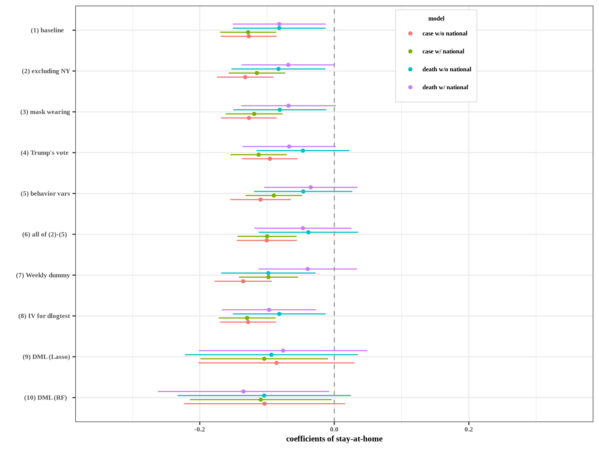

Causal impact of masks, policies, behavior on early COVID-19 pandemic in the U.S.
Tables and Figures
Victor Chernozhukov, Paul Schrimpf, Hiro Kasahara
22 February, 2021
This file creates the figures and tables in Chernozhukov, Kasahara and Schrimpf (2020) “Causal Impact of Masks, Policies, Behavior on Early Covid-19 Pandemic in the U.S.”
1 Data Preparation
2 Empirical Results
2.1 Correlations
# cmat <- cor(df[,c(bvars,"residential",pols,"pindex")], use="pairwise.complete.obs")
# scmat <-
# matrix(sprintf("%.2f",cmat),nrow=(length(bvars)+length(pols)+2))
cmat <- cor(df[,c(bvars,pols,"pindex")], use="pairwise.complete.obs")
scmat <- matrix(sprintf("%.2f",cmat),nrow=(length(bvars)+length(pols)+1))
rownames(scmat) <- getlabel(rownames(cmat))
colnames(scmat) <- getlabel(colnames(cmat))
scmat[upper.tri(cmat)] <- ""
ltbl <- knitr::kable(scmat, format="latex", booktabs=TRUE, escape=FALSE,
align=(rep("c",ncol(scmat)))) %>%
row_spec(0, angle = 90)
cat(ltbl, file=paste(rootdir,"tex/tables_and_figures/corr.tex",sep="/"))
knitr::kable(scmat)| workplaces | retail | grocery | transit | masks for employees | closed K-12 schools | stay at home | closed movie theaters | closed restaurants | closed non-essent bus | business closure policies | |
|---|---|---|---|---|---|---|---|---|---|---|---|
| workplaces | 1.00 | ||||||||||
| retail | 0.93 | 1.00 | |||||||||
| grocery | 0.75 | 0.83 | 1.00 | ||||||||
| transit | 0.89 | 0.92 | 0.83 | 1.00 | |||||||
| masks for employees | -0.32 | -0.17 | -0.15 | -0.29 | 1.00 | ||||||
| closed K-12 schools | -0.91 | -0.79 | -0.55 | -0.72 | 0.43 | 1.00 | |||||
| stay at home | -0.69 | -0.69 | -0.70 | -0.71 | 0.28 | 0.62 | 1.00 | ||||
| closed movie theaters | -0.81 | -0.76 | -0.64 | -0.71 | 0.34 | 0.82 | 0.72 | 1.00 | |||
| closed restaurants | -0.77 | -0.82 | -0.68 | -0.76 | 0.21 | 0.74 | 0.72 | 0.82 | 1.00 | ||
| closed non-essent bus | -0.65 | -0.68 | -0.68 | -0.64 | 0.08 | 0.56 | 0.76 | 0.68 | 0.71 | 1.00 | |
| business closure policies | -0.84 | -0.84 | -0.75 | -0.79 | 0.24 | 0.78 | 0.81 | 0.92 | 0.93 | 0.87 | 1.00 |
2.2 Test Smoothing
We rearrange and linearly interpolate constant test counts, but do not apply any additional smoothing.
source(paste(rootdir,"cases_and_policies/rmd/smoothtests.R", sep="/"))## Warning in eval(ei, envir): Linearly interpolating and rearranging test counts and creating dlogtest varaible in
## data frame df.2.3 Cases
infovars <- list(c("dlogdc", "logdc"),
c("dlogdc", "logdc","dlogdc.national", "logdc.national"))
xlist <- list("","")
interactions <-list("month", statevars)
ilist <- list(interactions, interactions)
iv <- list("0","0")
tvars <- "dlogtests"
pols = c("pmaskbus","pk12","pshelter","pindex")
L <- L.c
sdf <- subset(df, as.vector(df$date)>=as.Date("2020-03-07"))
regs <- mainregressions(sdf,
"dlogdc", pols, bvars, infovars, tvars, xlist, ilist, iv, L=L)
summary(regs$piy[[1]]$reg)showhtmltables(regs$pib[[1]], regs$pbiy, regs$piy, regs$ip)2.3.1 Policies and Behavior
| Dependent variable: | ||||||||
| workplaces | retail | grocery | transit | workplaces | retail | grocery | transit | |
| (1) | (2) | (3) | (4) | (5) | (6) | (7) | (8) | |
| pmaskbus | 0.007 | 0.012 | 0.012 | -0.005 | 0.007 | 0.013 | 0.012 | -0.002 |
| (0.010) | (0.017) | (0.013) | (0.026) | (0.010) | (0.017) | (0.012) | (0.025) | |
| pk12 | -0.101*** | -0.104*** | -0.125*** | -0.123*** | -0.104*** | -0.104*** | -0.129*** | -0.130*** |
| (0.022) | (0.032) | (0.031) | (0.044) | (0.022) | (0.033) | (0.032) | (0.043) | |
| pshelter | -0.042*** | -0.045*** | -0.072*** | -0.079*** | -0.039*** | -0.047*** | -0.069*** | -0.076*** |
| (0.012) | (0.014) | (0.015) | (0.028) | (0.014) | (0.016) | (0.017) | (0.030) | |
| pindex | -0.071*** | -0.123*** | -0.092*** | -0.068* | ||||
| (0.015) | (0.022) | (0.018) | (0.037) | |||||
| pmovie | -0.015 | -0.022 | -0.019 | 0.043* | ||||
| (0.012) | (0.014) | (0.013) | (0.026) | |||||
| prestaurant | -0.023** | -0.058*** | -0.030*** | -0.059 | ||||
| (0.011) | (0.015) | (0.011) | (0.036) | |||||
| pnonessential | -0.032*** | -0.038*** | -0.041*** | -0.037* | ||||
| (0.011) | (0.014) | (0.012) | (0.021) | |||||
| dlogdc | 0.020*** | 0.009*** | 0.019*** | 0.022*** | 0.020*** | 0.010*** | 0.019*** | 0.024*** |
| (0.002) | (0.003) | (0.004) | (0.004) | (0.002) | (0.003) | (0.004) | (0.004) | |
| logdc | -0.019*** | -0.013** | 0.001 | -0.012 | -0.019*** | -0.014** | 0.001 | -0.013 |
| (0.003) | (0.006) | (0.005) | (0.009) | (0.003) | (0.006) | (0.005) | (0.009) | |
| state variables | Yes | Yes | Yes | Yes | Yes | Yes | Yes | Yes |
| Month : state variables | Yes | Yes | Yes | Yes | Yes | Yes | Yes | Yes |
| Observations | 3,825 | 3,825 | 3,825 | 3,825 | 3,825 | 3,825 | 3,825 | 3,825 |
| R2 | 0.941 | 0.888 | 0.762 | 0.844 | 0.941 | 0.889 | 0.763 | 0.848 |
| Adjusted R2 | 0.940 | 0.888 | 0.760 | 0.842 | 0.940 | 0.888 | 0.761 | 0.847 |
| Note: | p<0.1; p<0.05; p<0.01 | |||||||
2.3.2 Policies and Information
| Dependent variable: | ||||||||
| pmaskbus | pk12 | pshelter | pindex | pmaskbus | pk12 | pshelter | pindex | |
| (1) | (2) | (3) | (4) | (5) | (6) | (7) | (8) | |
| lag(workplaces, 14) | -0.056 | -0.055 | 0.405 | 0.389 | -0.044 | 0.013 | 0.166 | -0.147 |
| (0.679) | (0.094) | (0.579) | (0.411) | (0.750) | (0.084) | (0.696) | (0.439) | |
| lag(retail, 14) | 0.423 | -0.034 | -1.245** | -1.757*** | -0.080 | 0.234** | -0.755 | -1.277*** |
| (0.649) | (0.119) | (0.573) | (0.336) | (0.722) | (0.099) | (0.575) | (0.386) | |
| lag(grocery, 14) | -0.115 | 0.081 | 0.040 | 0.431* | 0.418 | -0.223 | -0.418 | 0.065 |
| (0.422) | (0.164) | (0.448) | (0.245) | (0.528) | (0.156) | (0.509) | (0.301) | |
| lag(transit, 14) | -0.504 | -0.084* | -0.442 | 0.125 | -0.613 | -0.024 | -0.339 | 0.218 |
| (0.417) | (0.049) | (0.356) | (0.261) | (0.415) | (0.040) | (0.346) | (0.263) | |
| dlogdc | -0.097*** | -0.019 | -0.002 | -0.017 | -0.120*** | -0.003 | 0.010 | -0.018 |
| (0.030) | (0.013) | (0.036) | (0.019) | (0.032) | (0.014) | (0.038) | (0.019) | |
| logdc | 0.024 | 0.014** | 0.011 | 0.028* | 0.039 | 0.006 | -0.002 | 0.019 |
| (0.031) | (0.007) | (0.019) | (0.016) | (0.033) | (0.006) | (0.020) | (0.016) | |
| dlogdc.national | -0.061 | 0.001 | 0.155* | 0.280*** | ||||
| (0.099) | (0.027) | (0.093) | (0.050) | |||||
| logdc.national | -0.320*** | 0.161*** | 0.343*** | 0.377*** | ||||
| (0.077) | (0.023) | (0.070) | (0.050) | |||||
| state variables | Yes | Yes | Yes | Yes | Yes | Yes | Yes | Yes |
| Month : state variables | Yes | Yes | Yes | Yes | Yes | Yes | Yes | Yes |
| sum behavior | 0.082 | 0.064 | 0.535 | 0.457 | 0.262 | -0.063 | 0.452 | 0.501 |
| (0.189) | (0.040) | (0.189) | (0.099) | (0.268) | (0.038) | (0.261) | (0.139) | |
| Observations | 3,825 | 3,825 | 3,825 | 3,825 | 3,825 | 3,825 | 3,825 | 3,825 |
| R2 | 0.534 | 0.219 | 0.576 | 0.597 | 0.548 | 0.273 | 0.589 | 0.625 |
| Adjusted R2 | 0.530 | 0.212 | 0.573 | 0.593 | 0.544 | 0.266 | 0.586 | 0.622 |
| Note: | p<0.1; p<0.05; p<0.01 | |||||||
2.3.3 Policy, Behavior, and Case Growth
| Dependent variable: | ||||
| (1) | (2) | (3) | (4) | |
| lag(pmaskbus, 14) | -0.090*** | -0.091*** | -0.100*** | -0.100*** |
| (0.031) | (0.032) | (0.029) | (0.030) | |
| lag(pk12, 14) | -0.074 | -0.083 | 0.043 | 0.031 |
| (0.080) | (0.090) | (0.096) | (0.103) | |
| lag(pshelter, 14) | -0.063 | -0.058 | -0.079 | -0.071 |
| (0.050) | (0.048) | (0.052) | (0.050) | |
| lag(pindex, 14) | 0.051 | 0.045 | ||
| (0.062) | (0.060) | |||
| lag(pmovie, 14) | 0.032 | 0.045 | ||
| (0.050) | (0.049) | |||
| lag(prestaurant, 14) | 0.023 | 0.022 | ||
| (0.044) | (0.043) | |||
| lag(pnonessential, 14) | -0.001 | -0.016 | ||
| (0.040) | (0.040) | |||
| lag(workplaces, 14) | 1.055* | 1.042* | 0.391 | 0.355 |
| (0.543) | (0.556) | (0.610) | (0.618) | |
| lag(retail, 14) | 0.594* | 0.611** | 0.316 | 0.342 |
| (0.303) | (0.309) | (0.316) | (0.317) | |
| lag(grocery, 14) | -0.471* | -0.478* | -0.259 | -0.266 |
| (0.284) | (0.288) | (0.282) | (0.284) | |
| lag(transit, 14) | 0.347 | 0.339 | 0.355 | 0.339 |
| (0.258) | (0.268) | (0.247) | (0.253) | |
| lag(dlogdc, 14) | 0.015 | 0.015 | 0.024 | 0.024 |
| (0.026) | (0.025) | (0.028) | (0.028) | |
| lag(logdc, 14) | -0.105*** | -0.105*** | -0.088*** | -0.087*** |
| (0.019) | (0.019) | (0.021) | (0.021) | |
| lag(dlogdc.national, 14) | -0.095** | -0.095** | ||
| (0.042) | (0.043) | |||
| lag(logdc.national, 14) | -0.177*** | -0.180*** | ||
| (0.049) | (0.050) | |||
| dlogtests | 0.152*** | 0.153*** | 0.155*** | 0.156*** |
| (0.043) | (0.043) | (0.042) | (0.041) | |
| state variables | Yes | Yes | Yes | Yes |
| Month : state variables | Yes | Yes | Yes | Yes |
| sum policies | -0.176 | -0.178 | -0.091 | -0.090 |
| (0.128) | (0.133) | (0.153) | (0.158) | |
| sum behavior | -0.804 | -0.801 | -0.425 | -0.413 |
| (0.140) | (0.140) | (0.157) | (0.160) | |
| Observations | 3,825 | 3,825 | 3,825 | 3,825 |
| R2 | 0.761 | 0.761 | 0.766 | 0.766 |
| Adjusted R2 | 0.759 | 0.759 | 0.763 | 0.764 |
| Note: | p<0.1; p<0.05; p<0.01 | |||
2.3.4 Policy and Case Growth
| Dependent variable: | ||||
| (1) | (2) | (3) | (4) | |
| lag(pmaskbus, 14) | -0.083** | -0.081** | -0.103*** | -0.102*** |
| (0.038) | (0.040) | (0.033) | (0.035) | |
| lag(pk12, 14) | -0.226** | -0.236** | 0.029 | 0.017 |
| (0.089) | (0.097) | (0.102) | (0.107) | |
| lag(pshelter, 14) | -0.127** | -0.121** | -0.115** | -0.103** |
| (0.057) | (0.054) | (0.054) | (0.052) | |
| lag(pindex, 14) | -0.076 | -0.001 | ||
| (0.068) | (0.061) | |||
| lag(pmovie, 14) | 0.027 | 0.062 | ||
| (0.051) | (0.046) | |||
| lag(prestaurant, 14) | -0.041 | -0.011 | ||
| (0.049) | (0.045) | |||
| lag(pnonessential, 14) | -0.051 | -0.038 | ||
| (0.050) | (0.043) | |||
| lag(dlogdc, 14) | 0.040 | 0.041* | 0.036 | 0.035 |
| (0.024) | (0.025) | (0.028) | (0.028) | |
| lag(logdc, 14) | -0.137*** | -0.137*** | -0.091*** | -0.090*** |
| (0.022) | (0.022) | (0.026) | (0.026) | |
| lag(dlogdc.national, 14) | -0.128*** | -0.123*** | ||
| (0.039) | (0.041) | |||
| lag(logdc.national, 14) | -0.243*** | -0.245*** | ||
| (0.045) | (0.045) | |||
| dlogtests | 0.156*** | 0.157*** | 0.158*** | 0.160*** |
| (0.044) | (0.044) | (0.042) | (0.041) | |
| state variables | Yes | Yes | Yes | Yes |
| Month : state variables | Yes | Yes | Yes | Yes |
| sum policies | -0.512 | -0.504 | -0.190 | -0.175 |
| (0.150) | (0.154) | (0.156) | (0.159) | |
| Observations | 3,825 | 3,825 | 3,825 | 3,825 |
| R2 | 0.749 | 0.750 | 0.763 | 0.763 |
| Adjusted R2 | 0.747 | 0.747 | 0.760 | 0.761 |
| Note: | p<0.1; p<0.05; p<0.01 | |||
NULL
savetextables(regs$pib[[1]], NULL, NULL, prefix="behavior")NULL
savetextables(c(regs$pib[[1]][1:4], regs$pib[[2]][1:4]), NULL, NULL, prefix="behavior-NI")NULL
savetextables(c(regs$pib[[1]][1:4]), NULL, NULL, prefix="behavior-cases-stateinfo")NULL
savetextables(c(regs$pib[[2]][1:4]), NULL, NULL, prefix="behavior-cases-nationinfo")NULL
savetextables(NULL, regs$pbiy, regs$piy, prefix="cases")NULL
savetextables(NULL, regs$pbiy[c(1,3)], regs$piy[c(1,3)], prefix="cases-nosplit")NULL
for (use.national in c(TRUE,FALSE)) {
sb <- ifelse(use.national, 2, 1)
sy <- ifelse(use.national, 3, 1)
pib <- lapply(regs$pib[[sb]][1:4], function(x) x$reg)
pbiy <- regs$pbiy[[sy]]$reg
piy <- regs$piy[[sy]]$reg
S <- 999
bs <- bootstrap_felm(sdf, c(pib,list(pbiy,piy)), S=S)
addse <- function(di, bdi) {
se <- di*NA
for (i in 1:length(se)) {
se[i] <- sd(sapply(bdi, function(b) b[i]))
}
tbl <- matrix(NA, nrow=2*nrow(di), ncol=ncol(di))
for (i in 1:nrow(di)) {
tbl[2*(i-1) + 1,] <- sapply(1:ncol(di), function(j) printstars(di[i,j], se[i,j]))
tbl[2*i,] <- sprintf("(%.3f)", se[i,])
}
colnames(tbl) <- colnames(di)
rownames(tbl) <- rep("", nrow(tbl))
rownames(tbl)[seq(1,nrow(tbl),by=2)] <- relabel(rownames(di))
return(tbl)
}
diall <- dieff_table(lapply(regs$pib[[sb]][1:4], function(x) x$reg$coef[,1]),
regs$pbiy[[sy]]$reg$coef[,1],
regs$piy[[sy]]$reg$coef[,1],
policies=c(pols, infovars[[sb]]), nsum=length(pols))
bdiall <- lapply(1:S, function(i)
dieff_table(lapply(1:4, function(j) bs[[j]][,i]),
bs[[5]][,i], bs[[6]][,i],
policies=c(pols, infovars[[sb]]), nsum=length(pols))
)
tbl <- addse(diall, bdiall)
#tbl <- tbl[-c(nrow(tbl), nrow(tbl)-1),]
ltbl <- kable(tbl, digits=2, format="latex", booktabs=TRUE, escape=FALSE,
linesep="",
align=(rep("c",ncol(tbl)))) %>%
column_spec(column=ncol(tbl)+1, border_left=TRUE)
cat(ltbl, file=paste(rootdir,
sprintf("tex/tables_and_figures/dieff-cases-%s.tex",ifelse(use.national, "NI","SI")),
sep="/"))
kable(tbl)
}# source(paste(rootdir,"cases_and_policies/rmd/generatetables.R", sep="/"))
# source(paste(rootdir,"cases_and_policies/rmd/bootstrap_felm.R", sep="/"))
# pols <- c("pmaskbus","pk12","pshelter","pindex")
L <- L.c
sdf <- subset(df, df$date>=as.Date("2020-03-07")) #+L)
regs <- mainregressions2(sdf,
"dlogdc", pols, bvars, infovars, tvars, xlist, ilist, iv, L=L)
for (use.national in c(TRUE,FALSE)) {
sb <- ifelse(use.national, 2, 1)
sy <- ifelse(use.national, 3, 1)
pib <- lapply(regs$pib[[sb]][1:4], function(x) x$reg)
pbiy <- regs$pbiy[[sy]]$reg
piy <- regs$piy[[sy]]$reg
for (i in 1:4) {
coef <- pib[[i]]$coefficients
coef[is.na(coef)] <- 0
pib[[i]]$coefficients <- coef
pib[[i]]$beta <- coef
}
coef <- pbiy$coefficients
coef[is.na(coef)] <- 0
pbiy$coefficients <- coef
pbiy$beta <- coef
S <- 999
bs <- bootstrap_felm2(sdf, c(pib,list(pbiy,piy)), S=S)
for (i in 1:4){
bs[[i]][2,]<-0.0
}
bs[[5]][5,]<-0.0
addse <- function(di, bdi) {
se <- di*NA
for (i in 1:length(se)) {
se[i] <- sd(sapply(bdi, function(b) b[i]))
}
tbl <- matrix(NA, nrow=2*nrow(di), ncol=ncol(di))
for (i in 1:nrow(di)) {
tbl[2*(i-1) + 1,] <- sapply(1:ncol(di), function(j) printstars(di[i,j], se[i,j]))
tbl[2*i,] <- sprintf("(%.3f)", se[i,])
}
colnames(tbl) <- colnames(di)
rownames(tbl) <- rep("", nrow(tbl))
rownames(tbl)[seq(1,nrow(tbl),by=2)] <- relabel(rownames(di))
return(tbl)
}
diall <- dieff_table2(lapply(regs$pib[[sb]][1:4], function(x) x$reg$coef[,1]),
regs$pbiy[[sy]]$reg$coef[,1],
regs$piy[[sy]]$reg$coef[,1],
policies=c(pols, infovars[[sb]]), nsum=length(pols))
bdiall <- lapply(1:S, function(i)
dieff_table2(lapply(1:4, function(j) bs[[j]][,i]),
bs[[5]][,i], bs[[6]][,i],
policies=c(pols, infovars[[sb]]), nsum=length(pols))
)
tbl <- addse(diall, bdiall)
#tbl <- tbl[-c(nrow(tbl), nrow(tbl)-1),]
ltbl <- kable(tbl, digits=2, format="latex", booktabs=TRUE, escape=FALSE,
linesep="",
align=(rep("c",ncol(tbl)))) %>%
column_spec(column=ncol(tbl)+1, border_left=TRUE)
cat(ltbl, file=paste(rootdir,
sprintf("tex/tables_and_figures/dieff-cases-constrain-%s.tex",ifelse(use.national, "NI","SI")),
sep="/"))
kable(tbl)
}2.4 Deaths (with deaths as information)
df$zero <- 0
infovarsd <- list(c("dlogdd", "logdd"),
c("dlogdd", "logdd","dlogdd.national", "logdd.national"))
pols = c("pmaskbus","pk12","pshelter","pindex")
iv <- list("0","0")
#pols = c("pmaskbus","pmaskall","pk12","pshelter","pindex")
L <- L.d
sdf <- subset(df, df$date>=as.Date("2020-03-07")) #+L)
regs <- mainregressions(sdf,
"dlogdd", pols, bvars, infovarsd, "zero", xlist, ilist, iv, L=L)
showhtmltables(regs$pib[[1]], regs$pbiy, regs$piy);2.4.1 Policies and Behavior
| Dependent variable: | ||||||||
| workplaces | retail | grocery | transit | workplaces | retail | grocery | transit | |
| (1) | (2) | (3) | (4) | (5) | (6) | (7) | (8) | |
| pmaskbus | 0.010 | 0.019 | 0.010 | -0.007 | 0.011 | 0.021 | 0.010 | -0.001 |
| (0.011) | (0.017) | (0.014) | (0.027) | (0.011) | (0.017) | (0.013) | (0.026) | |
| pk12 | -0.213*** | -0.239*** | -0.119*** | -0.222*** | -0.210*** | -0.232*** | -0.123*** | -0.221*** |
| (0.023) | (0.031) | (0.019) | (0.036) | (0.026) | (0.035) | (0.020) | (0.041) | |
| pshelter | -0.033*** | -0.038** | -0.080*** | -0.075** | -0.035** | -0.044** | -0.078*** | -0.079** |
| (0.012) | (0.017) | (0.017) | (0.031) | (0.014) | (0.017) | (0.019) | (0.032) | |
| pindex | -0.098*** | -0.155*** | -0.103*** | -0.106** | ||||
| (0.021) | (0.032) | (0.020) | (0.041) | |||||
| pmovie | -0.021 | -0.034* | -0.024 | 0.030 | ||||
| (0.017) | (0.019) | (0.015) | (0.028) | |||||
| prestaurant | -0.045*** | -0.076*** | -0.036*** | -0.083** | ||||
| (0.017) | (0.022) | (0.013) | (0.040) | |||||
| pnonessential | -0.030** | -0.041** | -0.041*** | -0.042* | ||||
| (0.014) | (0.017) | (0.015) | (0.025) | |||||
| dlogdd | -0.006 | -0.020*** | -0.006 | -0.012** | -0.005 | -0.019*** | -0.006 | -0.010* |
| (0.004) | (0.005) | (0.005) | (0.006) | (0.004) | (0.005) | (0.005) | (0.006) | |
| logdd | -0.016*** | -0.005 | -0.003 | -0.009 | -0.016*** | -0.007 | -0.003 | -0.011 |
| (0.004) | (0.006) | (0.005) | (0.009) | (0.004) | (0.007) | (0.005) | (0.009) | |
| state variables | Yes | Yes | Yes | Yes | Yes | Yes | Yes | Yes |
| Month : state variables | Yes | Yes | Yes | Yes | Yes | Yes | Yes | Yes |
| Observations | 3,468 | 3,468 | 3,468 | 3,468 | 3,468 | 3,468 | 3,468 | 3,468 |
| R2 | 0.917 | 0.856 | 0.766 | 0.837 | 0.917 | 0.857 | 0.767 | 0.841 |
| Adjusted R2 | 0.916 | 0.855 | 0.764 | 0.835 | 0.916 | 0.856 | 0.764 | 0.839 |
| Note: | p<0.1; p<0.05; p<0.01 | |||||||
2.4.2 Policy, Behavior, and Death Growth
| Dependent variable: | ||||
| (1) | (2) | (3) | (4) | |
| lag(pmaskbus, 21) | -0.146*** | -0.150*** | -0.147*** | -0.150*** |
| (0.050) | (0.050) | (0.049) | (0.049) | |
| lag(pk12, 21) | -0.232** | -0.250** | -0.178* | -0.198** |
| (0.102) | (0.098) | (0.103) | (0.100) | |
| lag(pshelter, 21) | -0.066 | -0.050 | -0.065 | -0.050 |
| (0.067) | (0.065) | (0.067) | (0.064) | |
| lag(pindex, 21) | 0.098 | 0.107 | ||
| (0.087) | (0.092) | |||
| lag(pmovie, 21) | 0.006 | 0.021 | ||
| (0.090) | (0.088) | |||
| lag(prestaurant, 21) | 0.087 | 0.083 | ||
| (0.072) | (0.070) | |||
| lag(pnonessential, 21) | -0.001 | -0.001 | ||
| (0.058) | (0.059) | |||
| lag(workplaces, 21) | 1.297** | 1.279** | 0.896 | 0.889 |
| (0.515) | (0.510) | (0.554) | (0.558) | |
| lag(retail, 21) | 0.572 | 0.598 | 0.523 | 0.546 |
| (0.441) | (0.460) | (0.438) | (0.455) | |
| lag(grocery, 21) | -0.935** | -0.966** | -0.887** | -0.912** |
| (0.388) | (0.397) | (0.368) | (0.377) | |
| lag(transit, 21) | 0.348 | 0.368 | 0.384 | 0.396 |
| (0.284) | (0.273) | (0.283) | (0.272) | |
| lag(dlogdd, 21) | 0.016 | 0.015 | 0.016 | 0.015 |
| (0.035) | (0.035) | (0.037) | (0.037) | |
| lag(logdd, 21) | -0.055** | -0.052** | -0.053** | -0.050** |
| (0.024) | (0.025) | (0.024) | (0.024) | |
| lag(dlogdd.national, 21) | -0.034 | -0.036 | ||
| (0.044) | (0.046) | |||
| lag(logdd.national, 21) | -0.047 | -0.046 | ||
| (0.039) | (0.038) | |||
| zero | ||||
| (0.000) | (0.000) | (0.000) | (0.000) | |
| state variables | Yes | Yes | Yes | Yes |
| Month : state variables | Yes | Yes | Yes | Yes |
| sum policies | -0.346 | -0.358 | -0.283 | -0.296 |
| (0.162) | (0.164) | (0.172) | (0.175) | |
| sum behavior | -0.837 | -0.845 | -0.661 | -0.670 |
| (0.164) | (0.170) | (0.176) | (0.179) | |
| Observations | 3,468 | 3,468 | 3,468 | 3,468 |
| R2 | 0.518 | 0.518 | 0.518 | 0.519 |
| Adjusted R2 | 0.512 | 0.512 | 0.513 | 0.513 |
| Note: | p<0.1; p<0.05; p<0.01 | |||
2.4.3 Policy and Death Growth
| Dependent variable: | ||||
| (1) | (2) | (3) | (4) | |
| lag(pmaskbus, 21) | -0.134*** | -0.133** | -0.156*** | -0.155*** |
| (0.051) | (0.053) | (0.050) | (0.052) | |
| lag(pk12, 21) | -0.610*** | -0.621*** | -0.234** | -0.248** |
| (0.115) | (0.121) | (0.111) | (0.109) | |
| lag(pshelter, 21) | -0.082 | -0.075 | -0.068 | -0.057 |
| (0.066) | (0.064) | (0.066) | (0.062) | |
| lag(pindex, 21) | -0.059 | 0.059 | ||
| (0.086) | (0.086) | |||
| lag(pmovie, 21) | -0.006 | 0.050 | ||
| (0.089) | (0.082) | |||
| lag(prestaurant, 21) | -0.012 | 0.030 | ||
| (0.061) | (0.055) | |||
| lag(pnonessential, 21) | -0.040 | -0.016 | ||
| (0.066) | (0.063) | |||
| lag(dlogdd, 21) | -0.001 | -0.001 | 0.017 | 0.016 |
| (0.033) | (0.033) | (0.036) | (0.037) | |
| lag(logdd, 21) | -0.078*** | -0.078*** | -0.064** | -0.063** |
| (0.026) | (0.027) | (0.027) | (0.027) | |
| lag(dlogdd.national, 21) | -0.147*** | -0.148** | ||
| (0.056) | (0.057) | |||
| lag(logdd.national, 21) | -0.116*** | -0.117*** | ||
| (0.032) | (0.032) | |||
| zero | ||||
| (0.000) | (0.000) | (0.000) | (0.000) | |
| state variables | Yes | Yes | Yes | Yes |
| Month : state variables | Yes | Yes | Yes | Yes |
| sum policies | -0.885 | -0.887 | -0.399 | -0.396 |
| (0.159) | (0.166) | (0.183) | (0.188) | |
| Observations | 3,468 | 3,468 | 3,468 | 3,468 |
| R2 | 0.502 | 0.502 | 0.512 | 0.512 |
| Adjusted R2 | 0.497 | 0.497 | 0.507 | 0.507 |
| Note: | p<0.1; p<0.05; p<0.01 | |||
NULL
savetextables(regs$pib[[1]], NULL, NULL, prefix="behavior-deathsinfo")NULL
savetextables(c(regs$pib[[1]][1:4], regs$pib[[2]][1:4]), NULL, NULL, prefix="behavior-deathsinfo-NI")NULL
savetextables(c(regs$pib[[1]][1:4]), NULL, NULL, prefix="behavior-deathsinfo-stateinfo")NULL
savetextables(c(regs$pib[[2]][1:4]), NULL, NULL, prefix="behavior-deathsinfo-nationinfo")NULL
savetextables(NULL, regs$pbiy, regs$piy, prefix="deaths-deathsinfo")NULL
savetextables(NULL, regs$pbiy[c(1,3)], regs$piy[c(1,3)], prefix="deaths-deathsinfo-nosplit")NULL
for (use.national in c(TRUE,FALSE)) {
sb <- ifelse(use.national, 2, 1)
sy <- ifelse(use.national, 3, 1)
pib <- lapply(regs$pib[[sb]][1:4], function(x) x$reg)
pbiy <- regs$pbiy[[sy]]$reg
piy <- regs$piy[[sy]]$reg
S <- 999
bs <- bootstrap_felm(sdf, c(pib,list(pbiy,piy)), S=S)
for (i in 1:4){
bs[[i]][2,]<-0.0
}
bs[[5]][5,]<-0.0
diall <- dieff_table(lapply(regs$pib[[sb]][1:4], function(x) x$reg$coef[,1]),
regs$pbiy[[sy]]$reg$coef[,1],
regs$piy[[sy]]$reg$coef[,1],
policies=c(pols, infovarsd[[sb]]),
nsum=length(pols)
)
bdiall <- lapply(1:S, function(i)
dieff_table(lapply(1:4, function(j) bs[[j]][,i]),
bs[[5]][,i], bs[[6]][,i],
policies=c(pols, infovarsd[[sb]]),
nsum=length(pols)
))
tbl <- addse(diall, bdiall)
#tbl <- tbl[-c(nrow(tbl), nrow(tbl)-1),]
ltbl <- kable(tbl, digits=2, format="latex", booktabs=TRUE, escape=FALSE,
linesep="",
align=(rep("c",ncol(tbl)))) %>%
column_spec(column=ncol(tbl)+1, border_left=TRUE)
cat(ltbl, file=paste(rootdir,
sprintf("tex/tables_and_figures/dieff-deaths-deathsinfo-%s.tex",ifelse(use.national, "NI","SI")),
sep="/"))
kable(tbl)
}pols <- c("pmaskbus","pk12","pshelter","pindex")
L <- L.d
sdf <- subset(df, df$date>=as.Date("2020-03-07")) #+L)
regs <- mainregressions2(sdf,
"dlogdd", pols, bvars, infovarsd, "zero", xlist, ilist, iv, L=L)
for (use.national in c(TRUE,FALSE)) {
sb <- ifelse(use.national, 2, 1)
sy <- ifelse(use.national, 3, 1)
pib <- lapply(regs$pib[[sb]][1:4], function(x) x$reg)
pbiy <- regs$pbiy[[sy]]$reg
piy <- regs$piy[[sy]]$reg
S <- 999
bs <- bootstrap_felm2(sdf, c(pib,list(pbiy,piy)), S=S)
diall <- dieff_table2(lapply(regs$pib[[sb]][1:4], function(x) x$reg$coef[,1]),
regs$pbiy[[sy]]$reg$coef[,1],
regs$piy[[sy]]$reg$coef[,1],
policies=c(pols, infovarsd[[sb]]),
nsum=length(pols)
)
bdiall <- lapply(1:S, function(i)
dieff_table2(lapply(1:4, function(j) bs[[j]][,i]),
bs[[5]][,i], bs[[6]][,i],
policies=c(pols, infovarsd[[sb]]),
nsum=length(pols)
))
tbl <- addse(diall, bdiall)
#tbl <- tbl[-c(nrow(tbl), nrow(tbl)-1),]
ltbl <- kable(tbl, digits=2, format="latex", booktabs=TRUE, escape=FALSE,
linesep="",
align=(rep("c",ncol(tbl)))) %>%
column_spec(column=ncol(tbl)+1, border_left=TRUE)
cat(ltbl, file=paste(rootdir,
sprintf("tex/tables_and_figures/dieff-deaths-deathsinfo-constrain-%s.tex",ifelse(use.national, "NI","SI")),
sep="/"))
kable(tbl)
}2.5 Robustness Check
infovars <- list(c("dlogdc", "logdc"),
c("dlogdc", "logdc","dlogdc.national", "logdc.national"))
tvars <- "dlogtests"
interactions <-list("month", statevars)
ilist <- list(interactions, interactions)
iv <- list("0","0") #,"(testratedc ~ lag(testratedc,14))")
# pi-y with log(vote)
xlist <-list(c("logvote"), c("logvote"))
L <- 14
sdf <- subset(df, df$date>=as.Date("2020-03-07")) #+L)
regs <- mainregressions(sdf,
"dlogdc", pols, bvars, infovars, tvars, xlist, ilist, iv, L=L)
showhtmltables(NULL, NULL, NULL, regs$ip)2.5.1 Policies and Information
| Dependent variable: | ||||||||
| pmaskbus | pk12 | pshelter | pindex | pmaskbus | pk12 | pshelter | pindex | |
| (1) | (2) | (3) | (4) | (5) | (6) | (7) | (8) | |
| lag(workplaces, 14) | -0.057 | -0.058 | 0.443 | 0.411 | -0.050 | 0.002 | 0.341 | -0.062 |
| (0.680) | (0.096) | (0.571) | (0.403) | (0.757) | (0.098) | (0.685) | (0.434) | |
| lag(retail, 14) | 0.418 | -0.056 | -0.987* | -1.609*** | -0.089 | 0.218* | -0.496 | -1.151*** |
| (0.656) | (0.130) | (0.548) | (0.316) | (0.723) | (0.113) | (0.552) | (0.362) | |
| lag(grocery, 14) | -0.112 | 0.093 | -0.095 | 0.353 | 0.424 | -0.213 | -0.591 | -0.020 |
| (0.427) | (0.164) | (0.439) | (0.242) | (0.527) | (0.157) | (0.498) | (0.299) | |
| lag(transit, 14) | -0.504 | -0.087* | -0.412 | 0.142 | -0.614 | -0.026 | -0.307 | 0.235 |
| (0.416) | (0.046) | (0.346) | (0.256) | (0.415) | (0.037) | (0.336) | (0.261) | |
| dlogdc | -0.096*** | -0.018 | -0.016 | -0.025 | -0.119*** | -0.003 | 0.003 | -0.022 |
| (0.029) | (0.015) | (0.036) | (0.018) | (0.032) | (0.015) | (0.038) | (0.019) | |
| logdc | 0.023 | 0.012 | 0.036 | 0.043** | 0.038 | 0.004 | 0.023 | 0.031* |
| (0.034) | (0.009) | (0.024) | (0.017) | (0.036) | (0.009) | (0.025) | (0.017) | |
| dlogdc.national | -0.059 | 0.005 | 0.097 | 0.252*** | ||||
| (0.098) | (0.026) | (0.085) | (0.050) | |||||
| logdc.national | -0.319*** | 0.162*** | 0.325*** | 0.368*** | ||||
| (0.077) | (0.023) | (0.069) | (0.049) | |||||
| logvote | 0.004 | 0.021 | -0.252** | -0.145** | 0.009 | 0.015 | -0.252** | -0.123* |
| (0.109) | (0.046) | (0.104) | (0.070) | (0.100) | (0.044) | (0.104) | (0.068) | |
| state variables | Yes | Yes | Yes | Yes | Yes | Yes | Yes | Yes |
| Month : state variables | Yes | Yes | Yes | Yes | Yes | Yes | Yes | Yes |
| sum behavior | 0.084 | 0.074 | 0.415 | 0.388 | 0.269 | -0.052 | 0.276 | 0.415 |
| (0.198) | (0.054) | (0.188) | (0.100) | (0.275) | (0.055) | (0.254) | (0.143) | |
| Observations | 3,825 | 3,825 | 3,825 | 3,825 | 3,825 | 3,825 | 3,825 | 3,825 |
| R2 | 0.534 | 0.220 | 0.585 | 0.603 | 0.548 | 0.273 | 0.598 | 0.629 |
| Adjusted R2 | 0.530 | 0.213 | 0.582 | 0.599 | 0.544 | 0.266 | 0.594 | 0.626 |
| Note: | p<0.1; p<0.05; p<0.01 | |||||||
NULL
savetextables(NULL, NULL, NULL, prefix="policy",ip = regs$ip[1:6])NULL
# interactions <-list("lag(month,L)", statevars)
# ilist <- list(interactions, interactions)
coef.vec.1 <- coef.vec.2 <- coef.vec.3 <- coef.vec.4 <- rep(0.0, 40)
se.vec.1 <- se.vec.2 <- se.vec.3 <- se.vec.4 <- rep(0.0, 40)
# case growth robustness
sdf <- subset(df, df$date>=as.Date("2020-03-07")) #+L)
piy <- list()
yvar <- "dlogdc"
# pols <- c("pmaskbus","pk12","pshelter","pmovie","prestaurant","pnonessential")
pols <- c("pmaskbus","pk12","pshelter","pindex")
for (k in 1:length(infovars)) {
# (1) baseline
xlist <-list("","")
tvars <- "dlogtests"
iv <- list("0","0")
sdf <- subset(df, df$date>=as.Date("2020-03-07")) #+L)
piy[[(1+8*(k-1))]] <- policyreg(sdf, yvar, pols, NULL,
c(sprintf("lag(%s, %d)", infovars[[k]], L),
tvars, xlist[[k]]),
ilist[[k]], 0, L=L)
# (2) excluding NY
xlist <-list("","")
sdf <- subset(df, df$date>=as.Date("2020-03-07")) #+L)
sdf2 <- sdf[which(sdf$state!='New York'),]
piy[[(2+8*(k-1))]] <- policyreg(sdf2, yvar, pols, NULL,
c(sprintf("lag(%s, %d)", infovars[[k]], L),
tvars, xlist[[k]]),
ilist[[k]], 0, L=L)
# (3) adding mask wearing rate
sdf <- subset(df, df$date>=as.Date("2020-03-07")) #+L)
xlist <-list(c("mask_percent"), c("mask_percent"))
piy[[(3+8*(k-1))]] <- policyreg(sdf, yvar, pols, NULL,
c(sprintf("lag(%s, %d)", infovars[[k]], L),
tvars, xlist[[k]]),
ilist[[k]], 0, L=L)
# (4) adding log(Trump's vote)
sdf <- subset(df, df$date>=as.Date("2020-03-07")) #+L)
xlist <-list(c("logvote"), c("logvote"))
piy[[(4+8*(k-1))]] <- policyreg(sdf, yvar, pols, NULL,
c(sprintf("lag(%s, %d)", infovars[[k]], L),
tvars, xlist[[k]]),
ilist[[k]], 0, L=L)
# (5) lagged behavior variables
sdf <- subset(df, df$date>=as.Date("2020-02-22")) #+L)
xlist <-list("","")
piy[[(5+8*(k-1))]] <- policyreg(sdf, yvar, pols, NULL,
c(sprintf("lag(%s, %d)", bvars, L+14),
sprintf("lag(%s, %d)", infovars[[k]], L),
tvars, xlist[[k]]),
ilist[[k]], 0, L=L)
# (6) (2)-(5)
sdf <- subset(df, df$date>=as.Date("2020-02-22")) #+L)
sdf2 <- sdf[which(sdf$state!='New York'),]
xlist <-list(c("mask_percent","logvote"), c("mask_percent","logvote"))
piy[[(6+8*(k-1))]] <- policyreg(sdf2, yvar, pols, NULL,
c(sprintf("lag(%s, %d)", bvars, L+14),
sprintf("lag(%s, %d)", infovars[[k]], L),
tvars, xlist[[k]]),
ilist[[k]], 0, L=L)
# (7) weekly dummy
sdf <- subset(df, df$date>=as.Date("2020-03-07")) #+L)
xlist <-list("week", "week")
piy[[(7+8*(k-1))]] <- policyreg(sdf, yvar, pols, NULL,
c(sprintf("lag(%s, %d)", infovars[[k]], L),
tvars, xlist[[k]]),
ilist[[k]], 0, L=L)
# (8) iv
sdf <- subset(df, df$date>=as.Date("2020-03-07")) #+L)
xlist <-list("", "")
iv <- list("(dlogtests ~ lag(logtests,7))","(dlogtests ~ lag(logtests,7))")
tvars <- ""
piy[[(8+8*(k-1))]] <- policyreg(sdf, yvar, pols, NULL,
c(sprintf("lag(%s, %d)", infovars[[k]], L),
tvars, xlist[[k]]),
ilist[[k]], iv, L=L)
}
for (j in 1:4) {
for (k in c(1:8)) {
coef.vec.1[[10*(j-1)+k]] <- piy[[k]]$reg$coefficients[[1+j]]
se.vec.1[[10*(j-1)+k]] <- piy[[k]]$reg$se[[1+j]]
coef.vec.2[[10*(j-1)+k]] <- piy[[7+k]]$reg$coefficients[[1+j]]
se.vec.2[[10*(j-1)+k]] <- piy[[7+k]]$reg$se[[1+j]]
}
}
colnames(piy[[1]]$reg$response) <- "dlogdc"
showhtmltables(NULL, NULL, piy);2.5.2 Policy and Case Growth
| Dependent variable: | ||||||||||||||||
| (1) | (2) | (3) | (4) | (5) | (6) | (7) | (8) | (9) | (10) | (11) | (12) | (13) | (14) | (15) | (16) | |
| lag(pmaskbus, 14) | -0.083** | -0.078** | -0.059* | -0.079** | -0.075** | -0.060* | -0.078** | -0.079** | -0.103*** | -0.096*** | -0.079*** | -0.099*** | -0.091*** | -0.066* | -0.082** | -0.100*** |
| (0.038) | (0.039) | (0.031) | (0.034) | (0.035) | (0.035) | (0.039) | (0.037) | (0.033) | (0.032) | (0.030) | (0.030) | (0.033) | (0.034) | (0.038) | (0.034) | |
| lag(pk12, 14) | -0.226** | -0.237*** | -0.229*** | -0.232*** | -0.217*** | -0.223*** | -0.145* | -0.223** | 0.029 | 0.007 | 0.028 | 0.004 | 0.030 | -0.017 | -0.036 | 0.033 |
| (0.089) | (0.092) | (0.086) | (0.075) | (0.083) | (0.068) | (0.083) | (0.087) | (0.102) | (0.099) | (0.099) | (0.094) | (0.100) | (0.087) | (0.099) | (0.104) | |
| lag(pshelter, 14) | -0.127** | -0.132** | -0.127** | -0.096* | -0.110** | -0.100* | -0.136** | -0.128** | -0.115** | -0.119** | -0.112** | -0.090* | -0.100** | -0.098* | -0.130** | -0.116** |
| (0.057) | (0.058) | (0.056) | (0.056) | (0.051) | (0.054) | (0.054) | (0.057) | (0.054) | (0.055) | (0.053) | (0.054) | (0.049) | (0.051) | (0.053) | (0.053) | |
| lag(pindex, 14) | -0.076 | -0.077 | -0.080 | -0.044 | -0.095 | -0.073 | -0.061 | -0.074 | -0.001 | -0.0005 | -0.003 | 0.021 | -0.032 | -0.026 | -0.036 | 0.002 |
| (0.068) | (0.069) | (0.067) | (0.061) | (0.067) | (0.061) | (0.064) | (0.067) | (0.061) | (0.062) | (0.061) | (0.058) | (0.063) | (0.059) | (0.062) | (0.062) | |
| lag(workplaces, 28) | -0.146 | 0.069 | -0.015 | 0.117 | ||||||||||||
| (0.490) | (0.428) | (0.499) | (0.404) | |||||||||||||
| lag(retail, 28) | -0.303 | -0.415 | -0.508 | -0.651* | ||||||||||||
| (0.356) | (0.358) | (0.358) | (0.372) | |||||||||||||
| lag(grocery, 28) | -0.227 | -0.396 | 0.189 | 0.046 | ||||||||||||
| (0.250) | (0.255) | (0.326) | (0.337) | |||||||||||||
| lag(transit, 28) | 0.569* | 0.460 | 0.367 | 0.251 | ||||||||||||
| (0.323) | (0.284) | (0.282) | (0.269) | |||||||||||||
| lag(dlogdc, 14) | 0.040 | 0.034 | 0.038 | 0.042* | 0.042 | 0.044* | 0.063** | 0.038 | 0.036 | 0.029 | 0.031 | 0.039 | 0.038 | 0.038 | 0.053** | 0.034 |
| (0.024) | (0.024) | (0.024) | (0.024) | (0.028) | (0.026) | (0.026) | (0.024) | (0.028) | (0.027) | (0.028) | (0.027) | (0.027) | (0.027) | (0.027) | (0.028) | |
| lag(logdc, 14) | -0.137*** | -0.138*** | -0.136*** | -0.155*** | -0.137*** | -0.161*** | -0.110*** | -0.136*** | -0.091*** | -0.090*** | -0.088*** | -0.111*** | -0.094*** | -0.115*** | -0.091*** | -0.090*** |
| (0.022) | (0.023) | (0.020) | (0.018) | (0.020) | (0.018) | (0.024) | (0.022) | (0.026) | (0.028) | (0.023) | (0.022) | (0.022) | (0.022) | (0.025) | (0.026) | |
| lag(dlogdc.national, 14) | -0.128*** | -0.118*** | -0.120*** | -0.120*** | -0.106* | -0.048 | 0.007 | -0.128*** | ||||||||
| (0.039) | (0.039) | (0.040) | (0.037) | (0.061) | (0.067) | (0.040) | (0.038) | |||||||||
| lag(logdc.national, 14) | -0.243*** | -0.237*** | -0.243*** | -0.224*** | -0.241*** | -0.204*** | -0.210*** | -0.243*** | ||||||||
| (0.045) | (0.046) | (0.043) | (0.043) | (0.045) | (0.043) | (0.039) | (0.045) | |||||||||
| dlogtests | 0.156*** | 0.143*** | 0.158*** | 0.148*** | 0.147*** | 0.120*** | 0.159*** | 0.158*** | 0.147*** | 0.160*** | 0.151*** | 0.159*** | 0.135*** | 0.157*** | ||
| (0.044) | (0.042) | (0.044) | (0.044) | (0.046) | (0.044) | (0.046) | (0.042) | (0.040) | (0.042) | (0.042) | (0.044) | (0.042) | (0.045) | |||
| mask_percent | -0.656 | -0.487 | -0.667 | -0.519 | ||||||||||||
| (0.586) | (0.536) | (0.506) | (0.489) | |||||||||||||
| logvote | 0.323*** | 0.344*** | 0.277*** | 0.286*** | ||||||||||||
| (0.065) | (0.052) | (0.058) | (0.053) | |||||||||||||
| week13 | -0.392*** | -0.127 | ||||||||||||||
| (0.101) | (0.080) | |||||||||||||||
| week14 | -0.632*** | -0.202*** | ||||||||||||||
| (0.130) | (0.078) | |||||||||||||||
| week15 | -0.780*** | -0.106 | ||||||||||||||
| (0.155) | (0.066) | |||||||||||||||
| week16 | -0.828*** | -0.028 | ||||||||||||||
| (0.174) | (0.064) | |||||||||||||||
| week17 | -0.678*** | 0.159** | ||||||||||||||
| (0.192) | (0.072) | |||||||||||||||
| week18 | -0.717*** | 0.112 | ||||||||||||||
| (0.199) | (0.076) | |||||||||||||||
| week19 | -0.726*** | 0.107 | ||||||||||||||
| (0.192) | (0.081) | |||||||||||||||
| week20 | -0.787*** | 0.042 | ||||||||||||||
| (0.190) | (0.093) | |||||||||||||||
| week21 | -0.694*** | 0.119 | ||||||||||||||
| (0.192) | (0.086) | |||||||||||||||
| week22 | -0.763*** | 0.030 | ||||||||||||||
| (0.192) | (0.093) | |||||||||||||||
| week23 | -0.719*** | 0.074 | ||||||||||||||
| (0.183) | (0.094) | |||||||||||||||
dlogtests(fit)
|
0.179** | 0.182** | ||||||||||||||
| (0.076) | (0.078) | |||||||||||||||
| state variables | Yes | Yes | Yes | Yes | Yes | Yes | Yes | Yes | Yes | Yes | Yes | Yes | Yes | Yes | Yes | Yes |
| Month : state variables | Yes | Yes | Yes | Yes | Yes | Yes | Yes | Yes | Yes | Yes | Yes | Yes | Yes | Yes | Yes | Yes |
| sum policies | -0.512 | -0.524 | -0.495 | -0.450 | -0.496 | -0.457 | -0.419 | -0.505 | -0.190 | -0.208 | -0.167 | -0.163 | -0.192 | -0.206 | -0.284 | -0.181 |
| (0.150) | (0.155) | (0.136) | (0.126) | (0.135) | (0.123) | (0.147) | (0.147) | (0.156) | (0.155) | (0.157) | (0.143) | (0.153) | (0.143) | (0.161) | (0.162) | |
| Observations | 3,825 | 3,750 | 3,825 | 3,825 | 3,825 | 3,750 | 3,825 | 3,825 | 3,825 | 3,750 | 3,825 | 3,825 | 3,825 | 3,750 | 3,825 | 3,825 |
| R2 | 0.749 | 0.746 | 0.751 | 0.757 | 0.752 | 0.758 | 0.763 | 0.749 | 0.763 | 0.758 | 0.764 | 0.768 | 0.764 | 0.767 | 0.767 | 0.762 |
| Adjusted R2 | 0.747 | 0.743 | 0.749 | 0.755 | 0.749 | 0.756 | 0.760 | 0.747 | 0.760 | 0.756 | 0.762 | 0.766 | 0.761 | 0.764 | 0.764 | 0.760 |
| Note: | p<0.1; p<0.05; p<0.01 | |||||||||||||||
NULL
savetextables(NULL, NULL, piy[1:6], prefix="cases-robust")NULL
# death growth
L <- L.d
piy <- list()
yvar <- "dlogdd"
infovarsd <- list(c("dlogdd", "logdd"),
c("dlogdd", "logdd","dlogdd.national", "logdd.national"))
#pols <- c("pmaskbus","pk12","pshelter","pmovie","prestaurant","pnonessential")
pols <- c("pmaskbus","pk12","pshelter","pindex")
for (k in 1:length(infovars)) {
# (1) baseline
xlist <-list("","")
sdf <- subset(df, df$date>=as.Date("2020-03-07")) #+L)
piy[[(1+8*(k-1))]] <- policyreg(sdf, yvar, pols, NULL,
c(sprintf("lag(%s, %d)", infovarsd[[k]], L),
xlist[[k]]),
ilist[[k]], 0, L=L)
# (2) excluding NY
xlist <-list("","")
sdf <- subset(df, df$date>=as.Date("2020-03-07")) #+L)
sdf2 <- sdf[which(sdf$state!='New York'),]
piy[[(2+8*(k-1))]] <- policyreg(sdf2, yvar, pols, NULL,
c(sprintf("lag(%s, %d)", infovarsd[[k]], L),
xlist[[k]]),
ilist[[k]], 0, L=L)
# (3) adding mask wearing rate
sdf <- subset(df, df$date>=as.Date("2020-03-07")) #+L)
xlist <-list(c("mask_percent"), c("mask_percent"))
piy[[(3+8*(k-1))]] <- policyreg(sdf, yvar, pols, NULL,
c(sprintf("lag(%s, %d)", infovarsd[[k]], L),
xlist[[k]]),
ilist[[k]], 0, L=L)
# (4) adding log(Trump's vote)
sdf <- subset(df, df$date>=as.Date("2020-03-07")) #+L)
xlist <-list(c("logvote"), c("logvote"))
piy[[(4+8*(k-1))]] <- policyreg(sdf, yvar, pols, NULL,
c(sprintf("lag(%s, %d)", infovarsd[[k]], L),
xlist[[k]]),
ilist[[k]], 0, L=L)
# (5) lagged behavior variables
sdf <- subset(df, df$date>=as.Date("2020-02-22")) #+L)
xlist <-list("","")
piy[[(5+8*(k-1))]] <- policyreg(sdf, yvar, pols, NULL,
c(sprintf("lag(%s, %d)", bvars, L+14),
sprintf("lag(%s, %d)", infovarsd[[k]], L),
xlist[[k]]),
ilist[[k]], 0, L=L)
# (6) (2)-(5)
sdf <- subset(df, df$date>=as.Date("2020-02-22")) #+L)
sdf2 <- sdf[which(sdf$state!='New York'),]
xlist <-list(c("mask_percent","logvote"), c("mask_percent","logvote"))
piy[[(6+8*(k-1))]] <- policyreg(sdf2, yvar, pols, NULL,
c(sprintf("lag(%s, %d)", bvars, L+14),
sprintf("lag(%s, %d)", infovarsd[[k]], L),
xlist[[k]]),
ilist[[k]], 0, L=L)
# (7) weekly dummy
sdf <- subset(df, df$date>=as.Date("2020-03-07")) #+L)
xlist <-list("week", "week")
piy[[(7+8*(k-1))]] <- policyreg(sdf, yvar, pols, NULL,
c(sprintf("lag(%s, %d)", infovarsd[[k]], L),
xlist[[k]]),
ilist[[k]], 0, L=L)
# (8) iv = baseline because there is no testing vars in death equation
piy[[(8+8*(k-1))]] <- piy[[(1+8*(k-1))]]
}
for (j in 1:4) {
for (k in c(1:8)) {
coef.vec.3[[10*(j-1)+k]] <- piy[[k]]$reg$coefficients[[1+j]]
se.vec.3[[10*(j-1)+k]] <- piy[[k]]$reg$se[[1+j]]
coef.vec.4[[10*(j-1)+k]] <- piy[[7+k]]$reg$coefficients[[1+j]]
se.vec.4[[10*(j-1)+k]] <- piy[[7+k]]$reg$se[[1+j]]
}
}
colnames(piy[[1]]$reg$response) <- "dlogdd"
showhtmltables(NULL, NULL, piy);2.5.3 Policy and Death Growth
| Dependent variable: | ||||||||||||||||
| (1) | (2) | (3) | (4) | (5) | (6) | (7) | (8) | (9) | (10) | (11) | (12) | (13) | (14) | (15) | (16) | |
| lag(pmaskbus, 21) | -0.134*** | -0.130** | -0.116** | -0.132*** | -0.115** | -0.110** | -0.117* | -0.134*** | -0.156*** | -0.150*** | -0.138*** | -0.155*** | -0.133*** | -0.120** | -0.118* | -0.156*** |
| (0.051) | (0.053) | (0.052) | (0.050) | (0.049) | (0.054) | (0.062) | (0.051) | (0.050) | (0.052) | (0.050) | (0.048) | (0.051) | (0.054) | (0.062) | (0.050) | |
| lag(pk12, 21) | -0.610*** | -0.615*** | -0.611*** | -0.617*** | -0.596*** | -0.592*** | -0.239** | -0.610*** | -0.234** | -0.232** | -0.235** | -0.250** | -0.169 | -0.157* | -0.121 | -0.234** |
| (0.115) | (0.118) | (0.113) | (0.107) | (0.119) | (0.112) | (0.095) | (0.115) | (0.111) | (0.113) | (0.111) | (0.100) | (0.104) | (0.091) | (0.095) | (0.111) | |
| lag(pshelter, 21) | -0.082 | -0.083 | -0.081 | -0.047 | -0.046 | -0.039 | -0.098 | -0.082 | -0.068 | -0.068 | -0.067 | -0.035 | -0.047 | -0.040 | -0.097 | -0.068 |
| (0.066) | (0.067) | (0.067) | (0.065) | (0.060) | (0.064) | (0.062) | (0.066) | (0.066) | (0.067) | (0.067) | (0.065) | (0.058) | (0.062) | (0.062) | (0.066) | |
| lag(pindex, 21) | -0.059 | -0.061 | -0.064 | -0.018 | -0.075 | -0.045 | 0.008 | -0.059 | 0.059 | 0.062 | 0.055 | 0.095 | 0.021 | 0.052 | 0.042 | 0.059 |
| (0.086) | (0.087) | (0.090) | (0.077) | (0.095) | (0.089) | (0.075) | (0.086) | (0.086) | (0.086) | (0.089) | (0.082) | (0.086) | (0.085) | (0.079) | (0.086) | |
| lag(workplaces, 35) | 1.170* | 1.313** | 0.751 | 0.819 | ||||||||||||
| (0.611) | (0.544) | (0.712) | (0.603) | |||||||||||||
| lag(retail, 35) | -0.822** | -0.886** | -1.167*** | -1.340*** | ||||||||||||
| (0.414) | (0.378) | (0.435) | (0.424) | |||||||||||||
| lag(grocery, 35) | 0.278 | 0.004 | 1.103*** | 0.953** | ||||||||||||
| (0.415) | (0.384) | (0.405) | (0.407) | |||||||||||||
| lag(transit, 35) | 0.095 | -0.070 | 0.001 | -0.163 | ||||||||||||
| (0.258) | (0.232) | (0.240) | (0.211) | |||||||||||||
| lag(dlogdd, 21) | -0.001 | -0.004 | -0.001 | 0.0001 | -0.020 | -0.013 | 0.017 | -0.001 | 0.017 | 0.012 | 0.016 | 0.018 | 0.013 | 0.017 | 0.022 | 0.017 |
| (0.033) | (0.035) | (0.033) | (0.032) | (0.040) | (0.042) | (0.038) | (0.033) | (0.036) | (0.038) | (0.037) | (0.036) | (0.043) | (0.045) | (0.038) | (0.036) | |
| lag(logdd, 21) | -0.078*** | -0.073*** | -0.077*** | -0.093*** | -0.065** | -0.077*** | -0.072*** | -0.078*** | -0.064** | -0.056** | -0.063** | -0.079*** | -0.067*** | -0.077*** | -0.067** | -0.064** |
| (0.026) | (0.027) | (0.024) | (0.022) | (0.026) | (0.024) | (0.026) | (0.026) | (0.027) | (0.028) | (0.025) | (0.023) | (0.025) | (0.023) | (0.027) | (0.027) | |
| mask_percent | -0.510 | -0.338 | -0.493 | -0.251 | ||||||||||||
| (0.476) | (0.450) | (0.469) | (0.458) | |||||||||||||
| logvote | 0.356*** | 0.337*** | 0.347*** | 0.327*** | ||||||||||||
| (0.073) | (0.077) | (0.080) | (0.087) | |||||||||||||
| week14 | 0.024 | -0.080 | ||||||||||||||
| (0.088) | (0.083) | |||||||||||||||
| week15 | -0.447*** | -0.281*** | ||||||||||||||
| (0.095) | (0.095) | |||||||||||||||
| week16 | -0.589*** | -0.213** | ||||||||||||||
| (0.133) | (0.095) | |||||||||||||||
| week17 | -0.527*** | -0.004 | ||||||||||||||
| (0.143) | (0.080) | |||||||||||||||
| week18 | -0.664*** | -0.095 | ||||||||||||||
| (0.133) | (0.077) | |||||||||||||||
| week19 | -0.608*** | -0.062 | ||||||||||||||
| (0.125) | (0.096) | |||||||||||||||
| week20 | -0.710*** | -0.193* | ||||||||||||||
| (0.145) | (0.102) | |||||||||||||||
| week21 | -0.594*** | -0.091 | ||||||||||||||
| (0.148) | (0.102) | |||||||||||||||
| week22 | -0.674*** | -0.176** | ||||||||||||||
| (0.149) | (0.086) | |||||||||||||||
| week23 | -0.628*** | -0.152 | ||||||||||||||
| (0.121) | (0.096) | |||||||||||||||
| lag(dlogdd.national, 21) | -0.147*** | -0.142** | -0.144*** | -0.146*** | -0.140** | -0.109* | -0.096** | -0.147*** | ||||||||
| (0.056) | (0.056) | (0.055) | (0.055) | (0.064) | (0.065) | (0.042) | (0.056) | |||||||||
| lag(logdd.national, 21) | -0.116*** | -0.120*** | -0.116*** | -0.112*** | -0.158*** | -0.174*** | -0.147*** | -0.116*** | ||||||||
| (0.032) | (0.033) | (0.032) | (0.029) | (0.045) | (0.043) | (0.031) | (0.032) | |||||||||
| state variables | Yes | Yes | Yes | Yes | Yes | Yes | Yes | Yes | Yes | Yes | Yes | Yes | Yes | Yes | Yes | Yes |
| Month : state variables | Yes | Yes | Yes | Yes | Yes | Yes | Yes | Yes | Yes | Yes | Yes | Yes | Yes | Yes | Yes | Yes |
| sum policies | -0.885 | -0.889 | -0.871 | -0.815 | -0.832 | -0.785 | -0.447 | -0.885 | -0.399 | -0.387 | -0.385 | -0.344 | -0.327 | -0.264 | -0.294 | -0.399 |
| (0.159) | (0.163) | (0.147) | (0.146) | (0.160) | (0.154) | (0.165) | (0.159) | (0.183) | (0.185) | (0.180) | (0.166) | (0.174) | (0.163) | (0.174) | (0.183) | |
| Observations | 3,468 | 3,400 | 3,468 | 3,468 | 3,468 | 3,400 | 3,468 | 3,468 | 3,468 | 3,400 | 3,468 | 3,468 | 3,468 | 3,400 | 3,468 | 3,468 |
| R2 | 0.502 | 0.492 | 0.503 | 0.511 | 0.505 | 0.504 | 0.517 | 0.502 | 0.512 | 0.503 | 0.513 | 0.520 | 0.517 | 0.516 | 0.520 | 0.512 |
| Adjusted R2 | 0.497 | 0.487 | 0.498 | 0.506 | 0.500 | 0.498 | 0.511 | 0.497 | 0.507 | 0.497 | 0.508 | 0.515 | 0.511 | 0.510 | 0.513 | 0.507 |
| Note: | p<0.1; p<0.05; p<0.01 | |||||||||||||||
NULL
savetextables(NULL, NULL, piy[1:6], prefix="deaths-robust")NULL
2.6 Fixed Effects
source(paste(rootdir,"cases_and_policies/rmd/debiasedfe.R", sep="/"))## Loading required package: MASS# Call boot command to conduct bootstrap
set.seed(88) # seed for replication
num_boot <- 500 # number of bootstraps
ncores <- 1 # number of cpus (speed)
# # nonpar will throw warning wrt multiple splitting bias correction
# # # Compute standard errors
# result <- structure(vapply(result_boot$t, as.double, numeric(1)), dim = dim(result_boot$t))
# tot_bse <- apply(result, 2, function(x) {
# # Normal scaled IQR
# return((quantile(x, .75, na.rm = TRUE) - quantile(x, .25, na.rm = TRUE))/(qnorm(.75) - qnorm(.25)))
# })
# df$month.c <- panellag(df$month,df$state,df$date,L.c)
# df$month.d <- panellag(df$month,df$state,df$date,L.d)
df$month.c <- df$month.d <- df$month
bse <- function(sdf, yvar, pols, bv, x, iv, L, fe) {
bootstat_fe <- function(data, form) {
m <- reg_fe(data, yvar, pols, bv, x, iv, L, fe)
return(as.vector(m$bc2))
}
result_boot <- boot(data = sdf, statistic = bootstat_fe, sim = "parametric", ran.gen = data_wb, # data_rg,
mle = 0, parallel = "multicore", ncpus = ncores, R = num_boot)
# Compute standard errors
result <- structure(vapply(result_boot$t, as.double, numeric(1)), dim = dim(result_boot$t))
tot_bse <- apply(result, 2, function(x) {
return((quantile(x, .75, na.rm = TRUE) - quantile(x, .25, na.rm = TRUE))/(qnorm(.75) - qnorm(.25)))
})
return(tot_bse)
}
# df$pindex <- (df$pmovie+df$prestaurant+df$pnonessential)/3
fe <- "state + week"
# fe <- "state + month"
iv <- 0
yvar <- "dlogdc"
bv <- NULL
infovars <- list(c("dlogdc", "logdc"),
c("dlogdc", "logdc","dlogdc.national", "logdc.national"))
tvars <- "dlogtests"
L <- L.c
sdf <- subset(df, df$date>=as.Date("2020-03-07")) #+L)
piy <- list()
for (k in 1:length(infovars)) {
# pols <- c("pmaskbus","pk12","pshelter","pmovie","prestaurant","pnonessential")
pols = c("pmaskbus","pk12","pshelter","pindex")
x <- c(sprintf("lag(%s, %d)", infovars[[k]], L), tvars)
m <- reg_fe(sdf, yvar, pols, bv, x, iv, L, fe)
piy[[(1+4*(k-1))]] <- m
m$reg$beta[1:(6+2*(k-1))] <- m$bc2[1:(6+2*(k-1))]
se <- bse(sdf, yvar, pols, bv, x, iv, L, fe)
z <- m$bc2/se
pval <- 2*pnorm(-abs(z))
m$reg$cse[1:(6+2*(k-1))] <- se[1:(6+2*(k-1))]
m$reg$ctval[1:(6+2*(k-1))] <- z[1:(6+2*(k-1))]
m$reg$cpval[1:(6+2*(k-1))] <- pval[1:(6+2*(k-1))]
# m$reg$beta[1:(9+2*(k-1))] <- m$bc2[1:(9+2*(k-1))]
piy[[(2+4*(k-1))]] <- m
#pols <- c("pmaskbus","pk12","pshelter","pindex")
pols <- c("pmaskbus","pk12","pshelter","pmovie","prestaurant","pnonessential")
m <- reg_fe(sdf, yvar, pols, bv, x, iv, L, fe)
piy[[(3+4*(k-1))]] <- m
# m$reg$beta[1:(6+2*(k-1))] <- m$bc2[1:(6+2*(k-1))]
m$reg$beta[1:(9+2*(k-1))] <- m$bc2[1:(9+2*(k-1))]
se <- bse(sdf, yvar, pols, bv, x, iv, L, fe)
z <- m$bc2/se
pval <- 2*pnorm(-abs(z))
m$reg$cse[1:(9+2*(k-1))] <- se[1:(9+2*(k-1))]
m$reg$ctval[1:(9+2*(k-1))] <- z[1:(9+2*(k-1))]
m$reg$cpval[1:(9+2*(k-1))] <- pval[1:(9+2*(k-1))]
piy[[(4+4*(k-1))]] <- m
}## Tue Feb 23 06:42:27 2021 finished centering model matrix# for (j in 1:4) {
# # coef.vec.1[[10*(j-1)+9]] <- piy[[1]]$reg$beta[[j]]
# # se.vec.1[[10*(j-1)+9]] <- piy[[1]]$reg$se[[j]]
# coef.vec.1[[10*(j-1)+10]] <- piy[[2]]$reg$beta[[j]]
# se.vec.1[[10*(j-1)+10]] <- piy[[2]]$reg$cse[[j]]
# # coef.vec.2[[10*(j-1)+9]] <- piy[[5]]$reg$beta[[j]]
# # se.vec.2[[10*(j-1)+9]] <- piy[[5]]$reg$se[[j]]
# coef.vec.2[[10*(j-1)+10]] <- piy[[6]]$reg$beta[[j]]
# se.vec.2[[10*(j-1)+10]] <- piy[[6]]$reg$cse[[j]]
# }
colnames(piy[[1]]$reg$response) <- "dlogdc"
showhtmltables(NULL, NULL, piy);2.6.1 Policy and Case Growth
| Dependent variable: | ||||||||
| (1) | (2) | (3) | (4) | (5) | (6) | (7) | (8) | |
| lag(pmaskbus, 14) | -0.103** | -0.271*** | -0.097** | -0.255*** | -0.099** | -0.260*** | -0.093** | -0.244*** |
| (0.044) | (0.075) | (0.044) | (0.071) | (0.043) | (0.070) | (0.043) | (0.071) | |
| lag(pk12, 14) | -0.023 | 0.085 | -0.050 | 0.042 | 0.072 | 0.210** | 0.045 | 0.166** |
| (0.060) | (0.098) | (0.066) | (0.094) | (0.068) | (0.090) | (0.075) | (0.084) | |
| lag(pshelter, 14) | -0.123** | -0.088 | -0.099** | -0.055 | -0.127** | -0.090 | -0.102** | -0.053 |
| (0.051) | (0.068) | (0.049) | (0.075) | (0.049) | (0.079) | (0.048) | (0.072) | |
| lag(pindex, 14) | -0.080 | -0.162* | -0.061 | -0.144 | ||||
| (0.076) | (0.086) | (0.077) | (0.089) | |||||
| lag(pmovie, 14) | 0.049 | 0.077 | 0.054 | 0.081 | ||||
| (0.068) | (0.084) | (0.069) | (0.087) | |||||
| lag(prestaurant, 14) | -0.031 | -0.068 | -0.016 | -0.051 | ||||
| (0.053) | (0.065) | (0.055) | (0.064) | |||||
| lag(pnonessential, 14) | -0.099** | -0.166*** | -0.101** | -0.171*** | ||||
| (0.047) | (0.063) | (0.046) | (0.060) | |||||
| lag(dlogdc, 14) | 0.063** | 0.079*** | 0.061** | 0.076*** | 0.058* | 0.077*** | 0.056* | 0.073*** |
| (0.029) | (0.026) | (0.029) | (0.028) | (0.030) | (0.028) | (0.030) | (0.027) | |
| lag(logdc, 14) | -0.216*** | -0.185*** | -0.214*** | -0.181*** | -0.202*** | -0.181*** | -0.199*** | -0.176*** |
| (0.020) | (0.032) | (0.021) | (0.033) | (0.022) | (0.034) | (0.023) | (0.037) | |
| lag(dlogdc.national, 14) | -0.037 | -0.062 | -0.040 | -0.064 | ||||
| (0.039) | (0.047) | (0.042) | (0.050) | |||||
| lag(logdc.national, 14) | -0.118*** | -0.153*** | -0.123*** | -0.160*** | ||||
| (0.032) | (0.039) | (0.034) | (0.038) | |||||
| dlogtests | 0.116*** | 0.116*** | 0.118*** | 0.147*** | 0.115*** | 0.115*** | 0.117*** | 0.144*** |
| (0.042) | (0.042) | (0.042) | (0.047) | (0.042) | (0.042) | (0.041) | (0.042) | |
| state variables | No | No | No | No | No | No | No | No |
| Month : state variables | No | No | No | No | No | No | No | No |
| sum policies | -0.330 | -0.330 | -0.327 | -0.327 | -0.216 | -0.216 | -0.211 | -0.211 |
| (-0.418) | (-0.418) | (-0.406) | (-0.406) | (-0.277) | (-0.277) | (-0.262) | (-0.262) | |
| Observations | 3,825 | 3,825 | 3,825 | 3,825 | 3,825 | 3,825 | 3,825 | 3,825 |
| R2 | 0.782 | 0.782 | 0.782 | 0.782 | 0.783 | 0.783 | 0.784 | 0.784 |
| Adjusted R2 | 0.778 | 0.778 | 0.778 | 0.778 | 0.779 | 0.779 | 0.780 | 0.780 |
| Note: | p<0.1; p<0.05; p<0.01 | |||||||
NULL
prefix="cases-fe"
#savetextables(NULL, NULL, piy[1:4], prefix="cases-fe") copying and
# pasting this is bad style and seems like it might create maintenance
# problems ...
ylbl <- colnames(piy[[1]]$reg$response)
if (ylbl=="dlogdd") ylbl <- "Death Growth"
if (ylbl=="dlogdc") ylbl <- "Case Growth"
tbl <- capture.output(stargazer(
lapply(piy[1:4], function(x) x$reg),
type="latex",
dep.var.labels.include=FALSE,
title=ylbl,
# omit=omit,
# omit.labels=omit.labels,
column.labels=c(yvar),
column.separate=c(length(piy[1:4])),
# add.lines=list(c("$\\sum_j \\mathrm{Policy}_j$",
# sapply(piy, function(x) printstars(x$peff[1], x$peff[2]))),
# c("",
# sprintf("(%.3f)",sapply(piy, function(x) x$peff[2])))
# ),
omit.stat=c("f", "ser"), model.names=FALSE,
no.space=TRUE,
column.sep.width="1pt",
df=FALSE, header=FALSE,
model.numbers=TRUE))
tbl <- relabel(tbl)
tbl <- gsub("Model (\\d)", "\\(\\1\\)", tbl)
#tbl <- gsub("No","Yes", tbl)
texfile <- sprintf("%s/tex/tables_and_figures/%s-piy.tex",rootdir,prefix)
cat(paste(tbl[c(-1,-2,-3,-4, -length(tbl))], collapse="\n"), file=texfile)
yvar <- "dlogdd"
infovars <- list(c("dlogdd", "logdd"),
c("dlogdd", "logdd","dlogdd.national", "logdd.national"))
L <- L.d
sdf <- subset(df, df$date>=as.Date("2020-03-07")) #+L)
piy <- list()
for (k in 1:length(infovars)) {
pols = c("pmaskbus","pk12","pshelter","pindex")
x <- sprintf("lag(%s, %d)", infovars[[k]], L)
m <- reg_fe(sdf, yvar, pols, bv, x, iv, L, fe)
piy[[(1+4*(k-1))]] <- m
m$reg$beta[1:(5+2*(k-1))] <- m$bc2[1:(5+2*(k-1))]
se <- bse(sdf, yvar, pols, bv, x, iv, L, fe)
z <- m$bc2/se
pval <- 2*pnorm(-abs(z))
m$reg$cse[1:(5+2*(k-1))] <- se[1:(5+2*(k-1))]
m$reg$ctval[1:(5+2*(k-1))] <- z[1:(5+2*(k-1))]
m$reg$cpval[1:(5+2*(k-1))] <- pval[1:(5+2*(k-1))]
#m$reg$beta[1:(8+2*(k-1))] <- m$bc2[1:(8+2*(k-1))]
piy[[(2+4*(k-1))]] <- m
# pols <- c("pmaskbus","pk12","pshelter","pindex")
pols <- c("pmaskbus","pk12","pshelter","pmovie","prestaurant","pnonessential")
m <- reg_fe(sdf, yvar, pols, bv, x, iv, L, fe)
piy[[(3+4*(k-1))]] <- m
#m$reg$beta[1:(5+2*(k-1))] <- m$bc2[1:(5+2*(k-1))]
m$reg$beta[1:(8+2*(k-1))] <- m$bc2[1:(8+2*(k-1))]
se <- bse(sdf, yvar, pols, bv, x, iv, L, fe)
z <- m$bc2/se
pval <- 2*pnorm(-abs(z))
m$reg$cse[1:(8+2*(k-1))] <- se[1:(8+2*(k-1))]
m$reg$ctval[1:(8+2*(k-1))] <- z[1:(8+2*(k-1))]
m$reg$cpval[1:(8+2*(k-1))] <- pval[1:(8+2*(k-1))]
piy[[(4+4*(k-1))]] <- m
}
# for (j in 1:4) {
# # coef.vec.3[[10*(j-1)+9]] <- piy[[1]]$reg$beta[[j]]
# # se.vec.3[[10*(j-1)+9]] <- piy[[1]]$reg$se[[j]]
# coef.vec.3[[10*(j-1)+10]] <- piy[[2]]$reg$beta[[j]]
# se.vec.3[[10*(j-1)+10]] <- piy[[2]]$reg$cse[[j]]
# # coef.vec.4[[10*(j-1)+9]] <- piy[[5]]$reg$beta[[j]]
# # se.vec.4[[10*(j-1)+9]] <- piy[[5]]$reg$se[[j]]
# coef.vec.4[[10*(j-1)+10]] <- piy[[6]]$reg$beta[[j]]
# se.vec.4[[10*(j-1)+10]] <- piy[[6]]$reg$cse[[j]]
# }
colnames(piy[[1]]$reg$response) <- "dlogdd"
showhtmltables(NULL, NULL, piy);2.6.2 Policy and Death Growth
| Dependent variable: | ||||||||
| (1) | (2) | (3) | (4) | (5) | (6) | (7) | (8) | |
| lag(pmaskbus, 21) | -0.136*** | -0.144* | -0.129*** | -0.109 | -0.130*** | -0.141* | -0.122** | -0.103 |
| (0.047) | (0.074) | (0.047) | (0.075) | (0.048) | (0.078) | (0.048) | (0.078) | |
| lag(pk12, 21) | -0.115 | -0.007 | -0.161 | -0.026 | 0.037 | -0.015 | -0.010 | -0.039 |
| (0.108) | (0.091) | (0.123) | (0.103) | (0.099) | (0.109) | (0.113) | (0.106) | |
| lag(pshelter, 21) | -0.047 | -0.097 | -0.010 | -0.151 | -0.047 | -0.082 | -0.006 | -0.140 |
| (0.077) | (0.099) | (0.072) | (0.112) | (0.078) | (0.102) | (0.073) | (0.105) | |
| lag(pindex, 21) | -0.081 | -0.166 | -0.030 | -0.188 | ||||
| (0.099) | (0.137) | (0.102) | (0.161) | |||||
| lag(pmovie, 21) | 0.041 | -0.035 | 0.059 | -0.059 | ||||
| (0.099) | (0.128) | (0.098) | (0.136) | |||||
| lag(prestaurant, 21) | 0.015 | -0.029 | 0.041 | -0.018 | ||||
| (0.086) | (0.097) | (0.084) | (0.098) | |||||
| lag(pnonessential, 21) | -0.143** | -0.024 | -0.135** | -0.026 | ||||
| (0.067) | (0.084) | (0.067) | (0.091) | |||||
| lag(dlogdd, 21) | 0.009 | 0.083* | 0.006 | 0.084 | 0.014 | 0.098* | 0.011 | 0.100* |
| (0.031) | (0.045) | (0.032) | (0.055) | (0.032) | (0.052) | (0.033) | (0.056) | |
| lag(logdd, 21) | -0.113*** | -0.113*** | -0.108*** | -0.232*** | -0.107*** | -0.253*** | -0.101*** | -0.257*** |
| (0.018) | (0.018) | (0.018) | (0.040) | (0.018) | (0.047) | (0.018) | (0.057) | |
| lag(dlogdd.national, 21) | -0.119*** | -0.149*** | -0.123*** | -0.152*** | ||||
| (0.039) | (0.038) | (0.040) | (0.041) | |||||
| lag(logdd.national, 21) | -0.167*** | -0.167*** | -0.171*** | -0.032 | ||||
| (0.026) | (0.026) | (0.027) | (0.056) | |||||
| state variables | No | No | No | No | No | No | No | No |
| Month : state variables | No | No | No | No | No | No | No | No |
| sum policies | -0.380 | -0.380 | -0.387 | -0.387 | -0.170 | -0.170 | -0.174 | -0.174 |
| (-0.449) | (-0.449) | (-0.386) | (-0.386) | (-0.463) | (-0.463) | (-0.408) | (-0.408) | |
| Observations | 3,468 | 3,468 | 3,468 | 3,468 | 3,468 | 3,468 | 3,468 | 3,468 |
| R2 | 0.536 | 0.536 | 0.537 | 0.537 | 0.540 | 0.540 | 0.541 | 0.541 |
| Adjusted R2 | 0.527 | 0.527 | 0.528 | 0.528 | 0.531 | 0.531 | 0.532 | 0.532 |
| Note: | p<0.1; p<0.05; p<0.01 | |||||||
NULL
prefix="deaths-fe"
#savetextables(NULL, NULL, piy[1:4], prefix="cases-fe")
ylbl <- colnames(piy[[1]]$reg$response)
if (ylbl=="dlogdd") ylbl <- "Death Growth"
if (ylbl=="dlogdc") ylbl <- "Case Growth"
tbl <- capture.output(stargazer(
lapply(piy[1:4], function(x) x$reg),
type="latex",
dep.var.labels.include=FALSE,
title=ylbl,
# omit=omit,
# omit.labels=omit.labels,
column.labels=c(yvar),
column.separate=c(length(piy[1:4])),
# add.lines=list(c("$\\sum_j \\mathrm{Policy}_j$",
# sapply(piy, function(x) printstars(x$peff[1], x$peff[2]))),
# c("",
# sprintf("(%.3f)",sapply(piy, function(x) x$peff[2])))
# ),
omit.stat=c("f", "ser"), model.names=FALSE,
no.space=TRUE,
column.sep.width="1pt",
df=FALSE, header=FALSE,
model.numbers=TRUE))
tbl <- relabel(tbl)
tbl <- gsub("Model (\\d)", "\\(\\1\\)", tbl)
#tbl <- gsub("No","Yes", tbl)
texfile <- sprintf("%s/tex/tables_and_figures/%s-piy.tex",rootdir,prefix)
cat(paste(tbl[c(-1,-2,-3,-4, -length(tbl))], collapse="\n"), file=texfile)2.7 DML
## the following part is moved to regprep.R
# df$logpop <- log(df$Population.2018)
# df$logsq <- log(df$Square.Miles)
# df$repub <- as.factor(df$party)
# df$party_dum <- ifelse(df$party == "republican", 0, 1)
# df$month3 <- ifelse(df$month==3,0,1)
# df$month4 <- ifelse(df$month==4,0,1)
# df$month5 <- ifelse(df$month==5,0,1)
# df$month6 <- ifelse(df$month==6,0,1)
# L <- L.c
# pols <- c("pmaskbus","pk12","pshelter","pmovie","prestaurant","pnonessential")
# infovars <- list(c("dlogdc", "logdc"),
# c("dlogdc", "logdc","dlogdc.national", "logdc.national"))
# infovarsd <- list(c("dlogdd", "logdd"),
# c("dlogdd", "logdd","dlogdd.national", "logdd.national"))
# bvars <- c("workplaces","retail","grocery","transit")
# vars <- c(infovars[[2]],infovarsd[[2]],pols,"pindex")
# for(i in 1:length(vars)) {
# L<-L.c
# v <- sprintf("%s.L14",vars[i])
# df[,v] <- panellag(df[,vars[i]],df$state,df$date, lag=L)
# L<-L.d
# v <- sprintf("%s.L21",vars[i])
# df[,v] <- panellag(df[,vars[i]],df$state,df$date, lag=L)
# }
# for(i in 1:length(bvars)) {
# L<-L.c
# v <- sprintf("%s.L14",bvars[i])
# df[,v] <- panellag(df[,bvars[i]],df$state,df$date, lag=L+14)
# L<-L.d
# v <- sprintf("%s.L21",bvars[i])
# df[,v] <- panellag(df[,bvars[i]],df$state,df$date, lag=L+14)
# }
# svars <- c("logpop","logsq","Percent.Unemployed..2018.",
# "Percent.living.under.the.federal.poverty.line..2018.",
# "Percent.at.risk.for.serious.illness.due.to.COVID","party_dum")
# mvars.c <- mvars.d <- mvars <- c("month4","month5","month6")
# # mvars.c <- c("month4.c","month5.c","month6.c")
# # mvars.d <- c("month4.d","month5.d","month6.d")
# ijs <- expand.grid(1:length(svars), 1:length(mvars.c))
# msvars.c <- vector(mode="character", length=lengths(ijs)[[1]])
# msvars.d <- vector(mode="character", length=lengths(ijs)[[1]])
# for (ij in (1:lengths(ijs)[[1]])){
# v <- sprintf("%s.%s",svars[ijs[[1]][ij]],mvars.c[ijs[[2]][ij]])
# msvars.c[ij] <- v
# df[,v] <- df[,svars[ijs[[1]][ij]]]*df[,mvars.c[ijs[[2]][ij]]]
# v <- sprintf("%s.%s",svars[ijs[[1]][ij]],mvars.d[ijs[[2]][ij]])
# msvars.d[ij] <- v
# df[,v] <- df[,svars[ijs[[1]][ij]]]*df[,mvars.d[ijs[[2]][ij]]]
# }
# bvars.c <- c("workplaces.L14","retail.L14","grocery.L14","transit.L14")
# bvars.d <- c("workplaces.L21","retail.L21","grocery.L21","transit.L21")
# wvars <- c(svars,mvars.c,msvars.c,"month3","mask_percent","logvote","dlogtests")
# wvars.d <- c(svars,mvars.d,msvars.d,"month3","mask_percent","logvote")
# xvars <- c(bvars.c,"dlogdc.L14","logdc.L14")
# xvars.national <- c(bvars.c,"dlogdc.L14","logdc.L14","dlogdc.national.L14","logdc.national.L14")
# xvars.d <- c(bvars.d,"dlogdd.L21","logdd.L21")
# xvars.national.d <- c(bvars.d,"dlogdd.L21","logdd.L21","dlogdd.national.L21","logdd.national.L21")
# pols.L14 <- c("pmaskbus.L14","pk12.L14","pshelter.L14","pindex.L14")
# pols.L21 <- c("pmaskbus.L21","pk12.L21","pshelter.L21","pindex.L21")
AM<- function(yv, xv, wv, sdf, reg, steps=5){
y <- sdf[,yv]
w <- sdf[,wv]
sdf[,"y"] <- y
# Initialize
fmla <- as.formula(paste("y", "~", paste(xv, collapse=" + "), sep=" "))
g1 <- predict(lm(fmla, data=sdf))
m1 <- predict(reg(w,as.vector(y- g1)))
i<-1
while(i<= steps) {
sdf$y <- y-m1
g1 <- predict(lm(fmla, data=sdf))
m1 <- predict(reg(w,as.vector(y-g1)))
i <- i+1 }
fitx <- lm(fmla, data=sdf)
fitw <- reg(w,as.vector(y-g1))
return(list(x=fitx , w = fitw))
}
DML2.for.PLM <- function(xv, wv, dv, yv, reg, sdf, nfold=5) {
unit <- as.double(sdf$state)
j <- quantile(unit, c(1:(nfold-1))/nfold)
I <- vector(mode = "list", length = nfold)
I[[1]] <- unit <= j[1]
for (b in 2:(nfold-1)) {
I[[b]] <- (unit <= j[b])&(unit > j[b-1])
}
I[[nfold]] <- unit > j[nfold-1]
nobs <- nrow(sdf)
ytil <- dtil <- rep(NA, nobs)
w <- as.matrix(sdf[,wv])
x <- as.matrix(sdf[,xv])
d <- as.vector(sdf[,dv])
y <- as.vector(sdf[,yv])
for(b in 1:nfold){
I1 <- (I[[b]]==FALSE)
I2 <- I[[b]]
yfit <- AM(yv, xv, wv, sdf[I1,], reg)
dfit <- AM(dv, xv, wv, sdf[I1,], reg)
yhat <- predict(yfit$x,newdata=sdf[I2,]) + predict(yfit$w, w[I2,], type="response")
dhat <- predict(dfit$x,newdata=sdf[I2,])+ predict(dfit$w, w[I2,], type="response")
dtil[I2] <- (d[I2] - dhat) #record residual
ytil[I2] <- (y[I2] - yhat) #record residual
cat(b," ")
}
sdf$ytil <- ytil
sdf$dtil <- dtil
rfit <- felm(ytil ~ dtil| 0| 0 | state, data=sdf) #estimate the main parameter by regressing one residual on the other
coef.est <- coef(rfit)[2] #extract coefficient
se <- sqrt(vcov(rfit)[2,2])
cat(sprintf("\ncoef (se) = %g (%g)\n", coef.est , se))
return( list(coef.est = coef.est , se=se) )
}
nfold <- 10
penalty = list(homoscedastic = FALSE, X.dependent.lambda =
FALSE, lambda.start = NULL, c = 1.7, gamma = 0.1)
reg.lasso <- function(x,y){ rlasso(x, y, penalty=penalty) } #ML method= rlasso
# dreg <- function(x,d){ cv.glmnet(x, d) } #ML method= rlasso
# yreg <- function(x,y){ cv.glmnet(x, y) } #ML method = rlasso
reg.RF <- function(x,y){ randomForest(x, y, maxnodes=8) } #ML method=Forest
for (j in 1:4){
sdf <- subset(df, df$date>=as.Date(sprintf("2020-03-%s",7+L.c)))
# y = sdf$dlogdc
yv <- "dlogdc"
wv <- wvars
if (j==1){
dv <- "pmaskbus.L14"
p <- pols.L14[-1]
# d = sdf$pmaskbus.L14
} else if (j==2) {
dv <- "pk12.L14"
p <- pols.L14[-2]
# d = sdf$pk12.L14
} else if (j==3) {
dv <- "pshelter.L14"
p <- pols.L14[-3]
# d = sdf$pshelter.L14
} else if (j==4) {
dv <- "pindex.L14"
p <- pols.L14[1:3]
# d = sdf$pindex.L14
}
# case growth without national
# x = as.matrix(cbind(sdf[,p],sdf[,xvars]))
xv <- c(xvars,p)
set.seed(1)
DML2.lasso <- DML2.for.PLM(xv, wv, dv, yv, reg.lasso, sdf, nfold = nfold)
coef.vec.1[[10*(j-1)+9]] <- DML2.lasso$coef.est
se.vec.1[[10*(j-1)+9]] <- DML2.lasso$se
set.seed(1)
DML2.RF <- DML2.for.PLM(xv, wv, dv, yv, reg.RF, sdf, nfold=nfold)
coef.vec.1[[10*(j-1)+10]] <- DML2.RF$coef.est
se.vec.1[[10*(j-1)+10]] <- DML2.RF$se
# case growth with national
xv <- c(xvars.national,p)
# x = as.matrix(cbind(sdf[,p],sdf[,xvars.national]))
set.seed(1)
DML2.lasso <- DML2.for.PLM(xv, wv, dv, yv, reg.lasso, sdf, nfold = nfold)
coef.vec.2[[10*(j-1)+9]] <- DML2.lasso$coef.est
se.vec.2[[10*(j-1)+9]] <- DML2.lasso$se
set.seed(1)
DML2.RF <- DML2.for.PLM(xv, wv, dv, yv, reg.RF, sdf, nfold = nfold)
coef.vec.2[[10*(j-1)+10]] <- DML2.RF$coef.est
se.vec.2[[10*(j-1)+10]] <- DML2.RF$se
## death growth
sdf <- subset(df, df$date>=as.Date(sprintf("2020-03-%s",7+L.d)))
yv <- "dlogdd"
wv <- wvars.d
# y = sdf$dlogdd
# sdf <- sdf[which(sdf$state!='New York'),]
if (j==1){
dv <- "pmaskbus.L21"
p <- pols.L21[-1]
# d = sdf$pmaskbus.L21
} else if (j==2) {
dv <- "pk12.L21"
p <- pols.L21[-2]
# d = sdf$pk12.L21
} else if (j==3) {
dv <- "pshelter.L21"
p <- pols.L21[-3]
# d = sdf$pshelter.L21
} else if (j==4) {
dv <- "pindex.L21"
p <- pols.L21[1:3]
# d = sdf$pindex.L21
}
# death growth without national
# x = as.matrix(cbind(sdf[,p],sdf[,xvars.d]))
xv <- c(xvars.d,p)
set.seed(1)
DML2.lasso <- DML2.for.PLM(xv, wv, dv, yv, reg.lasso, sdf, nfold = nfold)
coef.vec.3[[10*(j-1)+9]] <- DML2.lasso$coef.est
se.vec.3[[10*(j-1)+9]] <- DML2.lasso$se
set.seed(1)
DML2.RF <- DML2.for.PLM(xv, wv, dv, yv, reg.RF, sdf, nfold = nfold)
coef.vec.3[[10*(j-1)+10]] <- DML2.RF$coef.est
se.vec.3[[10*(j-1)+10]] <- DML2.RF$se
# death growth with national vars
# x = as.matrix(cbind(sdf[,p],sdf[,xvars.national.d]))
xv <- c(xvars.national.d,p)
set.seed(1)
DML2.lasso <- DML2.for.PLM(xv, wv, dv, yv, reg.lasso, sdf, nfold = nfold)
coef.vec.4[[10*(j-1)+9]] <- DML2.lasso$coef.est
se.vec.4[[10*(j-1)+9]] <- DML2.lasso$se
set.seed(1)
DML2.RF <- DML2.for.PLM(xv, wv, dv, yv, reg.RF, sdf, nfold = nfold)
coef.vec.4[[10*(j-1)+10]] <- DML2.RF$coef.est
se.vec.4[[10*(j-1)+10]] <- DML2.RF$se
}1 2 3 4 5 6 7 8 9 10
coef (se) = -0.0705596 (0.0385538) 1 2 3 4 5 6 7 8 9 10
coef (se) = -0.0875353 (0.0535676) 1 2 3 4 5 6 7 8 9 10
coef (se) = -0.0688415 (0.0378564) 1 2 3 4 5 6 7 8 9 10
coef (se) = -0.099504 (0.0425611) 1 2 3 4 5 6 7 8 9 10
coef (se) = -0.106062 (0.0485061) 1 2 3 4 5 6 7 8 9 10
coef (se) = -0.15344 (0.049836) 1 2 3 4 5 6 7 8 9 10
coef (se) = -0.11516 (0.0504369) 1 2 3 4 5 6 7 8 9 10
coef (se) = -0.154035 (0.054341) 1 2 3 4 5 6 7 8 9 10
coef (se) = -0.285343 (0.134777) 1 2 3 4 5 6 7 8 9 10
coef (se) = -0.537953 (0.157438) 1 2 3 4 5 6 7 8 9 10
coef (se) = 0.0339476 (0.106958) 1 2 3 4 5 6 7 8 9 10
coef (se) = -0.0871937 (0.104118) 1 2 3 4 5 6 7 8 9 10
coef (se) = -0.584952 (0.120217) 1 2 3 4 5 6 7 8 9 10
coef (se) = -0.694297 (0.122456) 1 2 3 4 5 6 7 8 9 10
coef (se) = -0.121816 (0.0919737) 1 2 3 4 5 6 7 8 9 10
coef (se) = -0.172284 (0.108996) 1 2 3 4 5 6 7 8 9 10
coef (se) = -0.0859174 (0.059234) 1 2 3 4 5 6 7 8 9 10
coef (se) = -0.103759 (0.0612141) 1 2 3 4 5 6 7 8 9 10
coef (se) = -0.104046 (0.0483927) 1 2 3 4 5 6 7 8 9 10
coef (se) = -0.109353 (0.0537921) 1 2 3 4 5 6 7 8 9 10
coef (se) = -0.0935522 (0.0655912) 1 2 3 4 5 6 7 8 9 10
coef (se) = -0.104216 (0.0655491) 1 2 3 4 5 6 7 8 9 10
coef (se) = -0.0760516 (0.0639116) 1 2 3 4 5 6 7 8 9 10
coef (se) = -0.134987 (0.0650045) 1 2 3 4 5 6 7 8 9 10
coef (se) = -0.0689741 (0.0783025) 1 2 3 4 5 6 7 8 9 10
coef (se) = -0.0920215 (0.0796636) 1 2 3 4 5 6 7 8 9 10
coef (se) = -0.070028 (0.0706447) 1 2 3 4 5 6 7 8 9 10
coef (se) = -0.0544774 (0.0641466) 1 2 3 4 5 6 7 8 9 10
coef (se) = -0.109602 (0.0858043) 1 2 3 4 5 6 7 8 9 10
coef (se) = -0.0473214 (0.0863711) 1 2 3 4 5 6 7 8 9 10
coef (se) = 0.0169453 (0.0758845) 1 2 3 4 5 6 7 8 9 10
coef (se) = 0.0477513 (0.0806645)
# WARNINGS! dplyr and dotwhisker seem to interfare with our
# regression codes --- need to call them only after calling regression
# codes; otherwise, they will improperly change our regression results
library(dplyr)
library(dotwhisker)## Registered S3 method overwritten by 'broom.mixed':
## method from
## tidy.gamlss broomvar.names <- c("(1) baseline ","(2) excluding NY","(3) mask wearing","(4) Trump's vote ","(5) behavior vars"," (6) all of (2)-(5) ","(7) Weekly dummy","(8) IV for dlogtest","(9) DML (Lasso)", "(10) DML (RF) ") #, "(10) FE with BC")
# mask coefficient
k <- 10
ij <- c(1:k)
results_df <- data.frame(term = rep(var.names, times = 4),
estimate = c(coef.vec.1[ij], coef.vec.2[ij],coef.vec.3[ij], coef.vec.4[ij]),
std.error = c(se.vec.1[ij], se.vec.2[ij],se.vec.3[ij], se.vec.4[ij]),
model = c(rep("case w/o national", k), rep("case w/ national", k),
rep("death w/o national",k), rep("death w/ national", k)),
stringsAsFactors = FALSE)
# Draw dot-and-whisker plot
fig <- dwplot(results_df, conf.level = .90) + theme_bw() +
theme( legend.justification=c(.01, .999), legend.position=c(.62, .99),
legend.title = element_blank(), legend.background =
element_rect(color="gray90")) +
xlab("coefficients of masks for employees") +
geom_vline(xintercept = 0, colour = "grey60", linetype = 2) +
theme(text=element_text(family="Times New Roman", face="bold", size=8)) +
xlim(-0.35, 0.35) +theme(
legend.title = element_text(size = 6),
legend.text = element_text(size = 6)
)# + ggtitle("Mask Mandates")
p <- "pmaskbus"
figdev(sprintf("%s/tex/tables_and_figures/%s-whisker-%s.pdf", rootdir, p, L.c), width=4, height=3)
print(fig)
dev.off()png 2
fig# school coefficient
ij <- c(11:(10+k))
results_df <- data.frame(term = rep(var.names, times = 4),
estimate = c(coef.vec.1[ij], coef.vec.2[ij],coef.vec.3[ij], coef.vec.4[ij]),
std.error = c(se.vec.1[ij], se.vec.2[ij],se.vec.3[ij], se.vec.4[ij]),
model = c(rep("case w/o national", k), rep("case w/ national", k),
rep("death w/o national",k), rep("death w/ national", k)),
stringsAsFactors = FALSE)
fig <- dwplot(results_df, conf.level = .90) + theme_bw() +
theme(
legend.justification=c(.01, .999), legend.position=c(.01,.99),
# legend.position = c(.95, .95),
# legend.justification = c("right", "top"),
# legend.box.just = "right",
legend.title = element_blank(), legend.background =
element_rect(color="gray90")) +
xlab("coefficients of closed K-12 schools") +
geom_vline(xintercept = 0, colour = "grey60", linetype = 2) +
theme(text=element_text(family="Times New Roman", face="bold", size=8)) +
xlim(-1.3, 0.3) +theme(
legend.title = element_text(size = 6),
legend.text = element_text(size = 6)
)# + ggtitle("School Closures")
p <- "pk12"
figdev(sprintf("%s/tex/tables_and_figures/%s-whisker-%s.pdf", rootdir, p, L.c), width=4, height=3)
print(fig)
dev.off()png 2
fig# stay-at-home coefficient
ij <- c(21:(20+k))
results_df <- data.frame(term = rep(var.names, times = 4),
estimate = c(coef.vec.1[ij], coef.vec.2[ij],coef.vec.3[ij], coef.vec.4[ij]),
std.error = c(se.vec.1[ij], se.vec.2[ij],se.vec.3[ij], se.vec.4[ij]),
model = c(rep("case w/o national", k), rep("case w/ national", k),
rep("death w/o national",k), rep("death w/ national", k)),
stringsAsFactors = FALSE)
fig <- dwplot(results_df, conf.level = .90) + theme_bw() +
theme( legend.justification=c(.01, .999), legend.position=c(.62, .99),
legend.title = element_blank(), legend.background =
element_rect(color="gray90")) +
xlab("coefficients of stay-at-home") +
geom_vline(xintercept = 0, colour = "grey60", linetype = 2) +
theme(text=element_text(family="Times New Roman", face="bold", size=8)) +
xlim(-0.35, 0.35) +theme(
legend.title = element_text(size = 6),
legend.text = element_text(size = 6)
)
# + ggtitle("Stay-at-home Orders")
p <- "pshelter"
figdev(sprintf("%s/tex/tables_and_figures/%s-whisker-%s.pdf", rootdir, p, L.c), width=4, height=3)
print(fig)
dev.off()png 2
fig
# pindex coefficient
ij <- c(31:(30+k))
results_df <- data.frame(term = rep(var.names, times = 4),
estimate = c(coef.vec.1[ij], coef.vec.2[ij],coef.vec.3[ij], coef.vec.4[ij]),
std.error = c(se.vec.1[ij], se.vec.2[ij],se.vec.3[ij], se.vec.4[ij]),
model = c(rep("case w/o national", k), rep("case w/ national", k),
rep("death w/o national",k), rep("death w/ national", k)),
stringsAsFactors = FALSE)
fig <- dwplot(results_df, conf.level = .90) + theme_bw() +
theme( legend.justification=c(.01, .999), legend.position=c(.62, .99),
legend.title = element_blank(), legend.background =
element_rect(color="gray90")) +
xlab("coefficients of average of three policy variables") +
# geom_vline(xintercept = 0, colour = "grey60", linetype = 2) +
theme(text=element_text(family="Times New Roman", face="bold", size=8)) +
xlim(-0.35, 0.35) +theme(
legend.title = element_text(size = 6),
legend.text = element_text(size = 6)
)# + ggtitle("Average of Four Policy Variables")
p <- "pindex"
figdev(sprintf("%s/tex/tables_and_figures/%s-whisker-%s.pdf", rootdir, p, L.c), width=4, height=3)
print(fig)
dev.off()png 2
fig
3 Figures
3.1 Policy
The following plot illustrates the effect of mandatory masks for employees. The lighter line is the average across states that did not have mask policy 14 days ago of case growth rate. The darker line is the average across states that did have a mask policy 14 days ago. (It’s actually the fit from regressing dlogdc on date dummies interacted with the 14 day lagged, 7 day moving average of a mask policy indicator). Light points are the state observations without a mask policy. Dark points are states with a mask policy 14 days ago.
pfigure <- function(df, pol, stlab=1, outcome="dlogdc", L=14) {
df$p <- panellag(df[,pol],df$state, df$date, L)
df$p <- ceiling(df$p)
df$y <- df[,outcome]
df$week <- data.table::week(df$date)
m <- lm(y ~ as.factor(date) + as.factor(date):p, data=df)
adf <- rbind(data.frame(date=m$xlevels$`as.factor(date)`, p=0),
data.frame(date=m$xlevels$`as.factor(date)`, p=1))
adf$week <- week(as.Date(adf$date))
pred <- predict(m, newdata=adf, interval="confidence")
adf$hat <- pred[,"fit"]
adf$lo <- pred[,"lwr"]
adf$hi <- pred[,"upr"]
adf$date <- as.Date(adf$date)
if (stlab==1) {
pdf <- subset(df, df$p<=0.01)
ldf <- subset(df, df$p>0.01)
} else if (stlab==0) {
pdf <- subset(df, df$p>=0.99)
ldf <- subset(df, df$p<0.99)
} else {
pdf <- df
ldf <- NULL #data.frame(date=NA,y=NA,ST=NA,p=NA)
}
clrs <- solarized_pal(2)(2)
fig <- ggplot(df,aes(color=p)) +
geom_point(data=pdf,aes(x=date, y=y, color=p),alpha=0.3, size=0.5) +
xlim(c(as.Date("2020-04-10"), max(df$date))) +
geom_line(data=adf, aes(x=date, y=hat, group=p), size=2) +
figtheme + scale_color_gradient(low=clrs[1], high=clrs[2]) + #colors_grad(palette="Green-Gold") +
theme(legend.position="none") +
xlab("") +
ylim(c(-0.65,0.4))
if (!is.null(ldf))
fig <- fig +
geom_text(data=ldf,
aes(x=date, y=y, label=ST, color=p), alpha=1.0, size=5)
return(fig)
}
fig <- pfigure(df, "pmaskbus", stlab=-1,L=L.c) + ggtitle(TeX(relabel("dlogdc given pmaskbus"))) + ylab(TeX(relabel("dlogdc")))
p <- "pmaskbus"
figdev(sprintf("%s/tex/tables_and_figures/%s-cases-%s.pdf", rootdir, p, L.c), width=4, height=3)
print(fig)
dev.off()## png
## 2fig
# use residuals after controlling for confounders
sdf <- subset(df, df$date>=as.Date("2020-03-07")) #+L)
sdf$one <- 1
wv <- c(svars,mvars.c,msvars.c,"month3","one")
wv <- c(svars,mvars.d,msvars.d,"month3","one","dlogdc.L14","logdc.L14")#,"dlogdc.national.L14","logdc.national.L14")
fmla <- as.formula(paste("dlogdc", "~", paste(wv, collapse=" + "), sep=" "))
g1 <- predict(lm(fmla, data=sdf))
sdf$dlogdc.res <- sdf$dlogdc - g1
mean(sdf$dlogdc.res)## [1] -1.293451e-15fig <- pfigure(sdf, "pmaskbus", stlab=-1,outcome="dlogdc.res",L=L.c) + ggtitle(TeX(relabel("dlogdc given pmaskbus"))) + ylab(TeX(relabel("residual of dlogdc"))) +
# xlim(c(as.Date("2020-04-01"), max(df$date))) +
ylim(c(-0.8,0.3)) ## Scale for 'y' is already present. Adding another scale for 'y', which will replace the existing scale.p <- "pmaskbus"
figdev(sprintf("%s/tex/tables_and_figures/%s-cases-res-%s.pdf", rootdir, p, L.c), width=4, height=3)
print(fig)
dev.off()## png
## 2figwv <- c(svars,mvars.d,msvars.d,"month3","one")
wv <- c(svars,mvars.d,msvars.d,"month3","one","dlogdd.L21","logdd.L21")#,"dlogdd.national.L21","logdd.national.L21")
fmla <- as.formula(paste("dlogdd", "~", paste(wv, collapse=" + "), sep=" "))
g1 <- predict(lm(fmla, data=sdf))
sdf$dlogdd.res <- sdf$dlogdd - g1
fig <- pfigure(sdf, "pmaskbus", stlab=-1,outcome="dlogdd.res",L=L.d) + ggtitle(TeX(relabel("dlogdd given pmaskbus"))) + ylab(TeX(relabel("residual of dlogdd")))+
# xlim(c(as.Date("2020-04-01"), max(df$date))) +
ylim(c(-0.8,0.3)) ## Scale for 'y' is already present. Adding another scale for 'y', which will replace the existing scale.p <- "pmaskbus"
figdev(sprintf("%s/tex/tables_and_figures/%s-deaths-res-%s.pdf", rootdir, p, L.d), width=4, height=3)
print(fig)
dev.off()## png
## 2fig
We now look at similar figures for other policies.
fig <- pfigure(df, "pk12", stlab=-1,L=L.c) +
ggtitle(TeX(relabel("dlogdc given pk12"))) +
xlim(c(as.Date("2020-03-21"), as.Date("2020-05-01"))) +
ylim(c(-0.6,2)) + ylab(TeX(relabel("dlogdc")))## Warning in predict.lm(m, newdata = adf, interval = "confidence"): prediction from a rank-deficient fit may be misleading## Scale for 'x' is already present. Adding another scale for 'x', which will replace the existing scale.## Scale for 'y' is already present. Adding another scale for 'y', which will replace the existing scale.p <- "pk12"
figdev(sprintf("%s/tex/tables_and_figures/%s-cases-%s.pdf", rootdir, p, L.c), width=4, height=3)
print(fig)## Warning: Removed 4910 rows containing missing values (geom_point).## Warning: Removed 152 row(s) containing missing values (geom_path).dev.off()## png
## 2fig## Warning: Removed 4910 rows containing missing values (geom_point).
## Warning: Removed 152 row(s) containing missing values (geom_path).
for (p in pols[3:length(pols)]) {
fig <- pfigure(df, p, stlab=-1) +
ggtitle(TeX(relabel(sprintf("dlogdc given %s",p)))) +
xlim(c(as.Date("2020-04-01"), max(df$date))) +
ylim(c(-1,1)) + ylab(TeX(relabel("dlogdc")))
figdev(sprintf("%s/tex/tables_and_figures/%s-cases-%s.pdf", rootdir, p, L.c), width=4, height=3)
print(fig)
dev.off()
}## Warning in predict.lm(m, newdata = adf, interval = "confidence"): prediction from a rank-deficient fit may be misleading## Scale for 'x' is already present. Adding another scale for 'x', which will replace the existing scale.
## Scale for 'y' is already present. Adding another scale for 'y', which will replace the existing scale.## Warning: Removed 3711 rows containing missing values (geom_point).## Warning: Removed 104 row(s) containing missing values (geom_path).## Warning in predict.lm(m, newdata = adf, interval = "confidence"): prediction from a rank-deficient fit may be misleading## Scale for 'x' is already present. Adding another scale for 'x', which will replace the existing scale.
## Scale for 'y' is already present. Adding another scale for 'y', which will replace the existing scale.## Warning: Removed 3711 rows containing missing values (geom_point).## Warning: Removed 104 row(s) containing missing values (geom_path).## Warning in predict.lm(m, newdata = adf, interval = "confidence"): prediction from a rank-deficient fit may be misleading## Scale for 'x' is already present. Adding another scale for 'x', which will replace the existing scale.
## Scale for 'y' is already present. Adding another scale for 'y', which will replace the existing scale.## Warning: Removed 3711 rows containing missing values (geom_point).## Warning: Removed 104 row(s) containing missing values (geom_path).## Warning in predict.lm(m, newdata = adf, interval = "confidence"): prediction from a rank-deficient fit may be misleading## Scale for 'x' is already present. Adding another scale for 'x', which will replace the existing scale.
## Scale for 'y' is already present. Adding another scale for 'y', which will replace the existing scale.## Warning: Removed 3711 rows containing missing values (geom_point).## Warning: Removed 105 row(s) containing missing values (geom_path).4 Death Growth Plots
fig <- pfigure(df, "pmaskbus", stlab=-1, outcome="dlogdd", L=L.d) +
ggtitle(TeX(relabel("dlogdd given pmaskbus"))) +
ylab(TeX(relabel("dlogdd")))
p <- "pmaskbus"
figdev(sprintf("%s/tex/tables_and_figures/%s-deaths-%s.pdf", rootdir, p, L.d),width=4, height=3)
print(fig)
dev.off()## png
## 2fig
fig <- pfigure(df, "pk12", stlab=-1, outcome="dlogdd", L=L.d) +
ggtitle(TeX(relabel("dlogdd given pk12"))) +
xlim(c(as.Date("2020-03-21"), as.Date("2020-05-01"))) +
ylim(c(-0.6,2)) + ylab(TeX(relabel("dlogdd")))## Scale for 'x' is already present. Adding another scale for 'x', which will replace the existing scale.## Scale for 'y' is already present. Adding another scale for 'y', which will replace the existing scale.p <- "pk12"
figdev(sprintf("%s/tex/tables_and_figures/%s-deaths-%s.pdf", rootdir, p, L.d),width=4, height=3)
print(fig)
dev.off()## png
## 2for (p in pols[3:length(pols)]) {
fig <- pfigure(df, p, stlab=-1, outcome="dlogdd", L=L.d) +
ggtitle(TeX(relabel(sprintf("dlogdd given %s",p)))) +
xlim(c(as.Date("2020-04-01"), max(df$date))) +
ylim(c(-1,1)) + ylab(TeX(relabel("dlogdd")))
figdev(sprintf("%s/tex/tables_and_figures/%s-deaths-%s.pdf", rootdir, p, L.d), width=4, height=3)
print(fig)
dev.off()
}## Scale for 'x' is already present. Adding another scale for 'x', which will replace the existing scale.
## Scale for 'y' is already present. Adding another scale for 'y', which will replace the existing scale.## Scale for 'x' is already present. Adding another scale for 'x', which will replace the existing scale.## Scale for 'y' is already present. Adding another scale for 'y', which will replace the existing scale.## Scale for 'x' is already present. Adding another scale for 'x', which will replace the existing scale.## Scale for 'y' is already present. Adding another scale for 'y', which will replace the existing scale.## Scale for 'x' is already present. Adding another scale for 'x', which will replace the existing scale.## Scale for 'y' is already present. Adding another scale for 'y', which will replace the existing scale.
This work is licensed under a Creative Commons Attribution-ShareAlike 4.0 International License